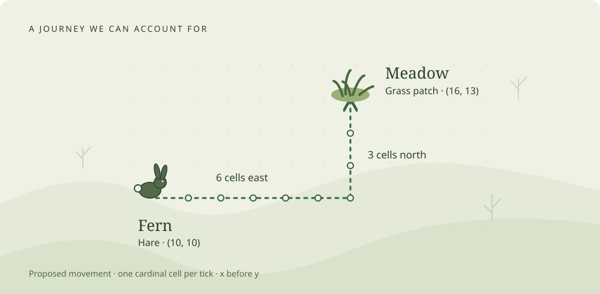
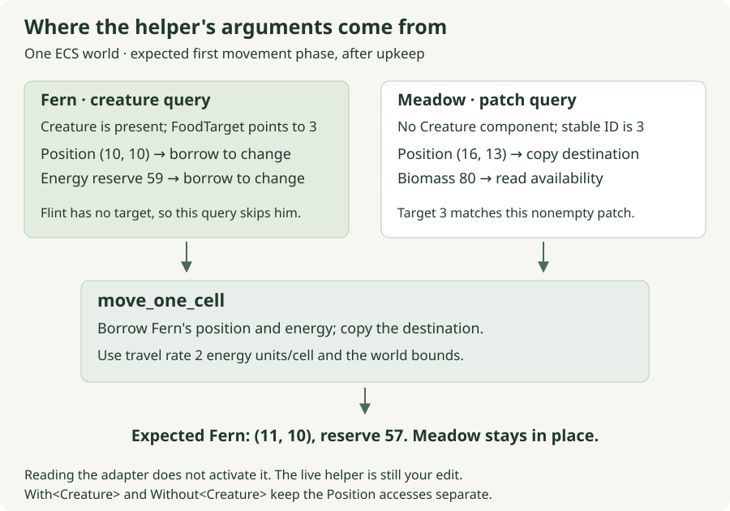
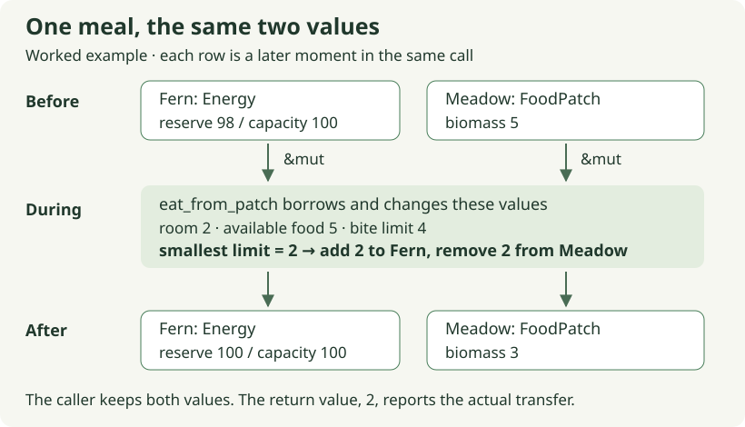
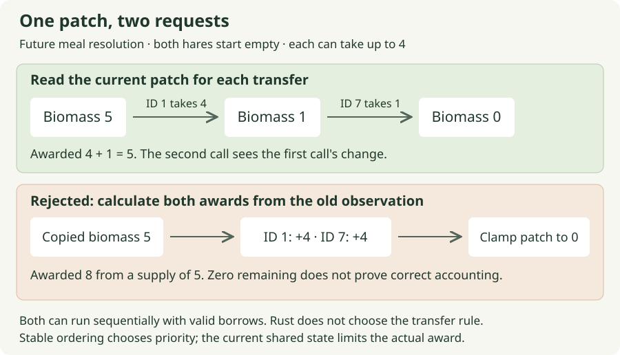
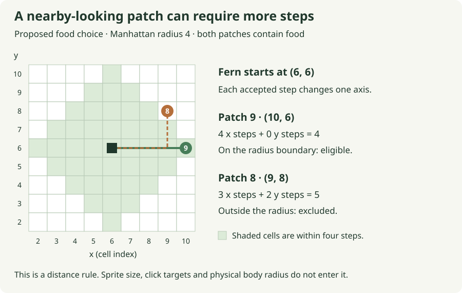
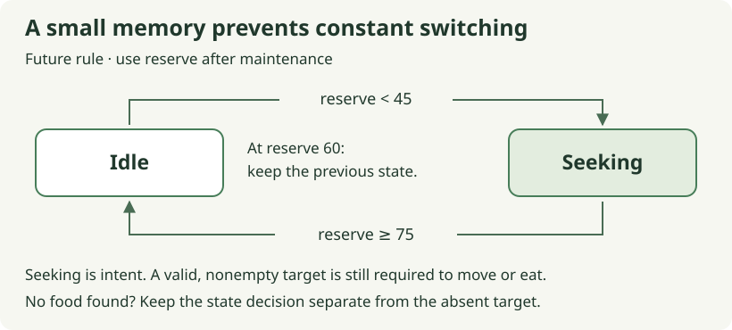
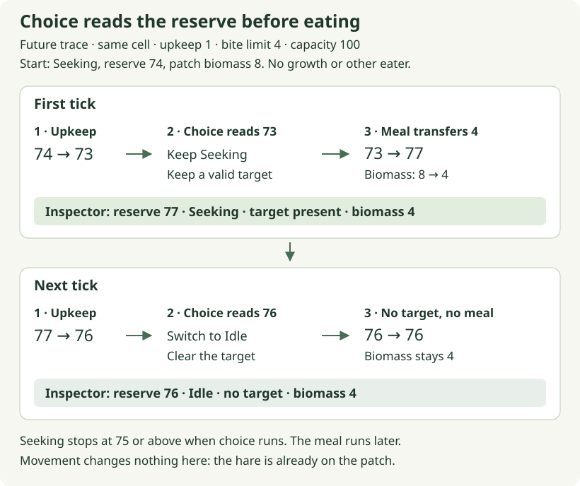
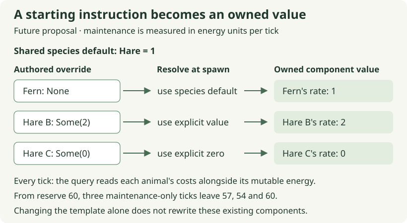
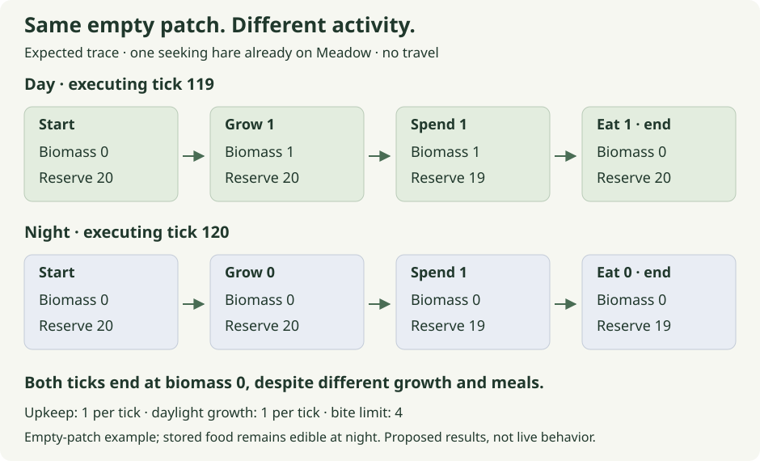
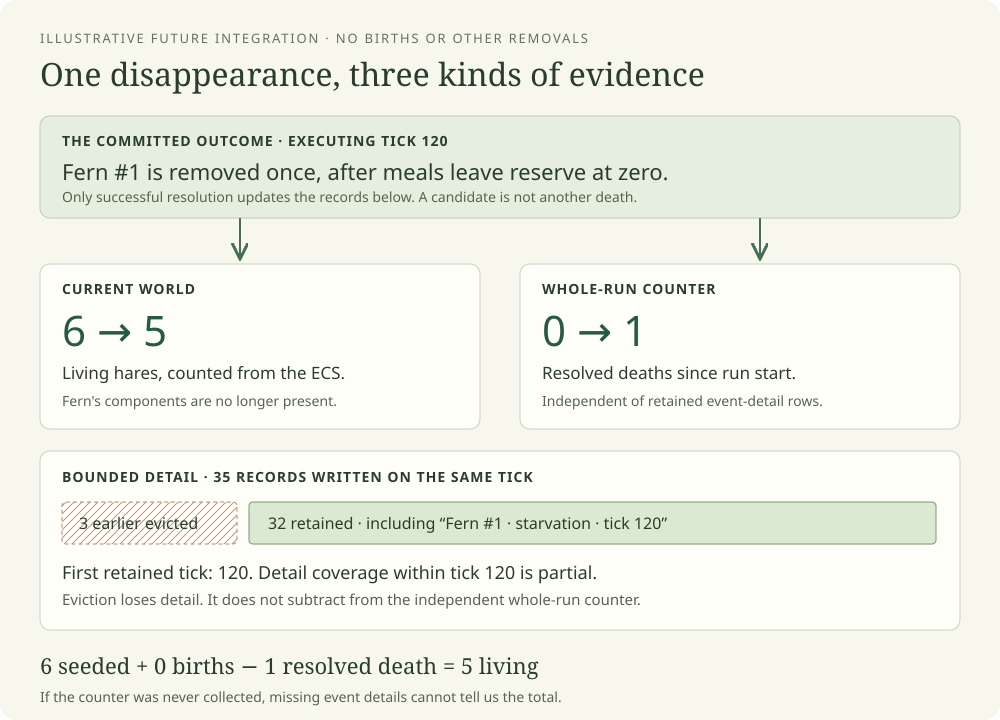

Moss · The textbook edition · September 2026
A small world, understood
Build a little life. Follow every consequence.
Fern is a hare. Meadow is a patch of grass. They are nine cells apart, and a short journey between them gives us a surprisingly good place to learn Rust. There is a value to copy, a pair of values to borrow, a decision to make before changing either, and a test that can tell whether we got the decision right.
Start with one affordable step →
New to the repository? Get this edition’s starter running first. It includes the exact unfinished exercise and its tests.

Open the journey diagram at full size.
{kind=link}
One proposed journey. Six cells east, then three north. A small rule can explain the whole route, including why it might stop early.
Moss is an ecosystem to build and a program to understand. A creature should eventually find food, spend resources, encounter other creatures and leave a history we can inspect. Those ambitions become useful when we can follow one small action all the way through. This book begins there and grows the model only when its inhabitants give us another problem worth solving.
A book beside the workbench
This edition is for someone who knows how to program and wants to regain fluency
while learning Rust and an entity-component-system architecture. The chapters
introduce a language feature when an actual decision needs it. You will meet
mutable references while committing a step, Option while looking for food,
and query filters while deciding which entities a system can reach.
Read at either of two speeds. You can follow the main argument and its pictures without opening an editor. Chapter 1 also gives you a ready-to-edit function and a test of your change. Later chapters let you explore and run complete reference examples; their live exercises are prepared one at a time during paired work. A reference command checks the printed answer, rather than your saved implementation, and does not install that behavior in the world.
Complete worked answers remain available throughout. Read and trace as much of an answer as helps you regain your bearings; the nearby variation gives you a chance to use the idea yourself.
The browser edition includes interactive teaching models. Every model has a static trace beside it so the chapter also makes sense in RustRover or print. The diagrams and labs explain a rule; they are not recordings of the Moss app.
The world at this edition’s starting line
The September 23, 2026 checkpoint has a working browser, an inspectable ECS world, and an implemented maintenance rule. Each executed tick spends an animal’s configured upkeep. Animals remain alive when their energy reaches zero.
Movement’s components, target, adapter and tests are prepared. Its small rule,
move_one_cell, still contains todo!(), and the adapter is not scheduled.
That function is the first contribution. The later meals, choice, individual
costs, growth and lifecycle rules in this book are worked proposals, not claims
about what is already installed.
The local repository’s NOW.md remains the live handoff when the project moves
past this edition. Its existing guides stay available. This book offers another
way to understand the same work, with more room for experiments and explanations.
Six questions to grow a world
The reading path follows consequences rather than a catalog of syntax:
- Can Fern afford this step? Copy a proposal, validate it, then commit the position and energy together.
- Who gets the last bite? Bound a meal by supply and capacity, then resolve two animals competing for the same food.
- Who chose Meadow? Turn a fixture’s instruction into a bounded observation and a remembered activity.
- What makes two hares different? Resolve defaults into owned values and design a comparison that tells us what those differences caused.
- Where does new food enter? Account for growth, daylight and stored biomass in a world whose time advances by executed ticks.
- What happened to this animal? Define a lifecycle boundary, retain an honest outcome, and distinguish an implementation error from a harsh environment.
These six chapters form the main path. A final coda considers predators, rest, offspring and inheritance without making them prerequisites for the first edit. The edition notes distinguish tested examples from behaviors still to be integrated into the living world.
Names that will stay with us
Fern and Flint are individual nicknames. Their species are Hare and Fox. Their ecological roles are Grazer and Hunter. Meadow is the nickname of one Grass patch, whose role is Producer. A second hare can share Fern’s species without sharing her identity or current energy.
An ECS archetype means something else: a group of entities with the same set of component types. It describes storage membership, not an animal’s species or personality. We will use these words consistently because each answers a different question about the world.
This book’s first journey needs only Fern, her destination and one affordable step. Open that function with us.
Put the book beside a running world
The first useful sight is modest: Fern stays in place while three presses of Step lower her reserve from 60 to 57. That tells you the browser can ask the simulation to execute ticks and inspect their result. Giving those ticks a journey is the first coding task.
If you already have the Moss project used by this edition, keep your checkout and begin with one affordable step. For a fresh start, use the edition’s small workspace:
Download the September 23 starter ZIP · SHA-256 checksum
Extract it into a new directory and open its Cargo.toml in RustRover or your
preferred editor. Run the commands below from the extracted folder. In
RustRover, its terminal is enough; the archive does not include personal IDE
settings or preconfigured Run actions.
What you have opened
The workspace contains two crates. moss-sim owns the ECS world and simulation
rules. moss-web turns that state into a browser view and submits control
requests. A native simulation test can exercise an entire tick without opening
a window, while Trunk builds the browser’s Rust into WebAssembly.
Cargo.toml workspace and shared dependencies
crates/moss-sim/src/ data, tick order and your first rule
crates/moss-sim/tests/ observable simulation checkpoints
crates/moss-web/ browser shell and presentation
scripts/ build-environment wrapper and checks
docs/tutorial/ extracted Rust references and their runner
This download captures the edition’s actual working-tree source, including local
changes based on commit 83a72a5abd46339e5448076fc183bfe33cd54029. It is not an
archive of that clean Git commit. STARTER-MANIFEST.json records every other
included file, its origin and its SHA-256 hash. The
Moss repository may continue past this
checkpoint; use the download when you want the exact starting exercise described
here.
Bring up the tools once
The commands use a Unix shell on macOS or Linux. Install Rust through the
official rustup instructions
if rustup is not available. A native compiler/linker is also needed; on macOS,
that comes with Apple’s Command Line Tools or Xcode. Native Windows setup has
not been verified for this edition, and the supplied shell wrappers need a
Unix-like shell.
The project selects Rust 1.93.1 in rust-toolchain.toml. Install its browser
target and the separately versioned build tools:
rustup toolchain install 1.93.1 --component rustfmt --component clippy --target wasm32-unknown-unknown
cargo +1.93.1 install trunk --version 0.21.14 --locked
cargo +1.93.1 install wasm-bindgen-cli --version 0.2.123 --locked
scripts/with-toolchain.sh cargo fetch --locked
Trunk packages the HTML, styles, JavaScript and compiled Rust. Its official setup guide explains that build path; the wasm-bindgen CLI reference describes the WebAssembly bindings tool. These are the edition’s pinned versions, so avoid substituting whichever versions happen to be newest while establishing the baseline.
Fetching dependencies once matters because the worked-reference runner later
uses Cargo offline. --locked keeps Cargo aligned with the supplied dependency
lockfile; it does not itself mean “no network.” See
Cargo’s fetch reference
for that distinction. The initial installs and compilation can take considerably
longer than a subsequent edit.
Python 3 is needed for the optional reference runner. Node is used by the full check script’s JavaScript syntax check; the application itself has no Node runtime dependency.
Establish one green result
Start with the implemented simulation rules:
scripts/with-toolchain.sh cargo test -p moss-sim --locked --test bootstrap --test maintenance
Expect five passing tests. They check the authored fixture, stable identities, tick/reset behavior and upkeep. A passing result establishes that baseline before your movement edit adds another behavior.
Now start the browser build and local server:
scripts/with-toolchain.sh trunk serve --locked --release
When the server reports readiness, open http://127.0.0.1:8080/. Select Fern and press Step three times. Her reserve should read 57 / 100, and her position should be unchanged. Reset restores the starting fixture. These are the expected observations to make on your machine; a successful compilation alone does not prove that the browser loaded it. Stop the server with Ctrl-C.
If port 8080 is already occupied, stop the other preview terminal before starting another. If the page still says Loading after a successful build, inspect the browser console before changing simulation code: the helper you are about to write is not scheduled yet.
The intentional red result is your doorway
Open crates/moss-sim/src/lessons.rs and find move_one_cell. Its body contains
todo!(). Run the one prepared test that calls it:
scripts/with-toolchain.sh cargo test -p moss-sim --locked --test movement movement_charges_only_an_affordable_actual_step -- --exact
One selected test should fail at the unfinished helper. That failure is useful: the code compiled, the test found the intended function, and it reached the place you will change. Zero matching tests or a compiler error is a different result. Full workspace tests also reach this deliberate failure, so the green baseline command above selects only the completed rules.
The exercise has a short handoff:
One helper body → one named test passes → review → activate the prepared system
Chapter 1 explains the rule and gives a complete worked answer. Its first stopping point is the named movement test passing. The browser remains maintenance-only until the adapter is deliberately scheduled and its two integration tests are enabled. Animals remain alive at zero energy; meals, autonomous choice and death are later chapters.
Run an answer without replacing your exercise
When a later chapter gives an isolated reference, these commands work from the same extracted folder after dependencies are fetched:
python3 docs/tutorial/authoring/check_path_examples.py --session 01
python3 docs/tutorial/authoring/check_path_examples.py
python3 docs/tutorial/authoring/check_path_examples.py --movement
The first checks one meal example. The second checks all sixteen future reference modules. The third substitutes and activates the movement answer inside a temporary copy, leaving your real helper and schedule alone. The runner creates a separate build directory and removes the temporary copy afterward.
The Markdown files in this download are clearly labeled extracted worked references. They retain the exact Rust fences needed by the runner, with their source hashes, while the explanations remain in this book. The download omits Git history, collaboration notes, editorial records, dependency caches and compiled output. Original Rust comments may still name fuller repository docs; use the code map to navigate the edition.
You now have a baseline you can distinguish from your next change. Open one step that Fern can afford and make the copied proposal become a paid, accepted step.
Chapter 1 · State, proposals and mutation
One step that Fern can afford
Fern has somewhere to go. The fixture gives her Meadow’s stable ID as a destination, and the prepared movement system can find that patch. What it cannot yet do is take a step. One function in the middle is waiting for its rule: decide whether the next cell is valid, whether Fern can pay for it, and what to change when she can.
This is a good first contribution because its result has three visible parts. Fern changes cell, her reserve changes by the price of the distance, and the function returns how far she actually traveled. A rejected attempt must keep all three accounts consistent.
Your first edit
Use your existing Moss checkout, or prepare the edition’s starter if you are joining from the public book.
Open crates/moss-sim/src/lessons.rs and find move_one_cell. Replace that
function’s unfinished body. Its signature, caller and focused test already
exist. The complete replacement is below;
use as much of it as helps while you regain your bearings.
From the repository root, run the prepared checkpoint:
scripts/with-toolchain.sh cargo test -p moss-sim --locked --test movement movement_charges_only_an_affordable_actual_step -- --exact
The original development checkout includes a RustRover Run configuration named Moss - Movement test. In the downloadable starter, use the command above in RustRover’s terminal or create a Cargo test configuration with those arguments. Before your edit, expect one selected test to fail with:
not yet implemented: Paired movement exercise: propose, validate, then commit one step
That result tells us the project compiled and reached the intended function. It has not yet tried a wrong movement rule; it stopped at the placeholder. A compiler diagnostic or zero matching tests means something different and deserves fixing before reasoning about the rule.
The first stopping point is that one named test passing. Review and activation come afterward. The browser currently runs maintenance only, so watching it before activation cannot tell you whether an otherwise correct helper works.
Think about a step before taking it
Use smaller coordinates than the browser world for the first calculation.
Fern starts at (2, 2), the target is (4, 4), and travel costs 2 energy
units per cell. Today’s rule moves at most one cardinal cell per call,
changing x before y. Her proposed next position is therefore (3, 2).
With a reserve of 59, that step costs 2 and leaves 57. With a reserve of 1, the same step is unaffordable. Moving first and then clamping subtraction at zero would give Fern travel she could not pay for. The rejection case is what makes the order of our writes matter.
| Starting reserve | Result of the same proposed step |
|---|---|
| 59 energy units | Move to (3, 2), retain 57, return 1 cell. |
| 2 energy units | Move to (3, 2), retain 0, return 1 cell. |
| 1 energy unit | Stay at (2, 2), retain 1, return 0 cells. |
The exact-price case matters. An animal with 2 can pay a cost of 2. The guard
must reject reserve < cost; rejecting reserve <= cost would forbid that
valid step.
At the workbench: a proposal is not the real position
The model below separates three moments that are almost adjacent in the Rust function. Start with 59, then change reserve to 1 and repeat. Watch the original position while the proposal changes. It should move only at an accepted commit.
This model illustrates the rule. It does not run the live Rust simulation.
Enable JavaScript to inspect each phase interactively. The table above gives the same accepted and rejected outcomes.
The first change is to a tentative value. The second moment asks whether it is allowed. The final moment writes the accepted result. This structure is useful well beyond movement: whenever one action must change several values together, deciding before writing keeps rejection from needing an undo path.
What the references let us change
Here is the existing signature, with its body omitted for discussion:
pub fn move_one_cell(
position: &mut Position,
energy: &mut Energy,
target: Position,
units_per_cell: u32,
config: WorldConfig,
) -> u32The first two parameters are mutable references. They give this call temporary,
exclusive access through which it can change the caller’s Position and Energy.
The remaining values arrive by value. Position and WorldConfig are small
Copy types here, so passing the destination and configuration does not transfer
away the caller’s ability to use them.
The mut in &mut Position describes the kind of reference. A local binding
such as let mut next answers a separate question: may this local value change?
That distinction becomes concrete in the first useful line of the body:
let mut next = *position;position is a reference; *position accesses the value it refers to. Because
Position implements Copy, assigning that value to next makes an independent
position. Changing next.x changes the proposal. It does not reach back through
the reference and change Fern.
Later, *position = next does reach through the reference. It replaces the
caller’s position with our accepted proposal. The same * syntax participates
in both expressions, but the assignment’s left side is the crucial difference:
we are now writing to the original place.
The official Rust book’s references and borrowing chapter is useful here if the distinction between a reference and the value behind it still feels slippery. Return with this one question: which assignment changes the caller’s value?
The complete worked replacement
Worked reference — replace only move_one_cell in
crates/moss-sim/src/lessons.rs. The file already imports the types used here.
Remove the existing placeholder; do not append another function with the same
name. This exact answer is also maintained in the current v2 guide.
pub fn move_one_cell(
position: &mut Position,
energy: &mut Energy,
target: Position,
units_per_cell: u32,
config: WorldConfig,
) -> u32 {
let in_bounds = |p: Position| {
(0..config.width() as i32).contains(&p.x) && (0..config.height() as i32).contains(&p.y)
};
if !in_bounds(*position) || !in_bounds(target) {
return 0;
}
let mut next = *position;
if next.x != target.x {
next.x += if next.x < target.x { 1 } else { -1 };
} else if next.y != target.y {
next.y += if next.y < target.y { 1 } else { -1 };
}
let distance = position
.x
.abs_diff(next.x)
.checked_add(position.y.abs_diff(next.y))
.expect("step distance overflow");
let cost = distance
.checked_mul(units_per_cell)
.expect("movement cost overflow");
if energy.reserve < cost {
return 0;
}
*position = next;
energy.reserve -= cost;
distance
}The guard comes before the proposal
in_bounds is a closure: a local callable value. Its |p: Position| names
one argument. A coordinate is valid when both axes lie inside their ranges.
The range 0..width includes zero and excludes width; width 32 permits x
from 0 through 31. Signed coordinates let us represent an invalid −1 and
reject it deliberately. The casts to i32 fit because WorldConfig validates
dimensions in the range 8–256.
Rejecting an invalid start matters as much as rejecting an invalid destination. Otherwise a helper might quietly walk a malformed entity back into the world, concealing the state that should have prompted investigation. Our selected contract rejects either case without mutation.
An if can produce a number
In next.x += if next.x < target.x { 1 } else { -1 };, the inner if evaluates
to an integer. Rust’s branches can supply values, so we use the direction
comparison to choose an increment rather than assigning it in a separate block.
The outer else if preserves x-before-y. Two independent if statements
would be a different movement rule: when both coordinates differ, they could
change both axes. Diagonal travel is not inherently wrong. It is wrong for
this function’s stated one-cardinal-cell contract and its prepared test.
A number needs a unit and an account
The proposed distance is the absolute x change plus the absolute y change.
Under this rule it is 0 or 1 cell. Multiplying by energy units per cell
produces the proposed cost in energy units. The type u32 alone does not
encode that distinction; the names, signature and contract supply it.
checked_add and checked_mul return an Option, because an arithmetic result
might not fit its integer type. expect takes the successful value or stops
with the given explanation if the arithmetic assumption fails. These checks
protect representability. The subsequent comparison protects affordability.
An affordable action and a representable calculation are different questions.
Nothing has changed in the caller yet. Only after the guard accepts the cost
do we assign the proposed position and subtract the energy. The final
distance has no semicolon because it is the function’s returned expression.
Writing distance; would discard that value and leave the body returning (),
which does not match -> u32.
A test should notice the mistake we care about
The prepared test lives in crates/moss-sim/tests/movement.rs. Its first case
constructs position (2, 2), reserve 59, target (4, 4) and rate 2. After the
call it checks the returned distance and the new position and the new
reserve. A function that returns 1 without writing anything should fail.
Later cases make the question sharper. A reserve of 1 must reject without mutation; an exact reserve of 2 must pay successfully; a rate of 3 must charge 3. That last case catches a plausible shortcut: hard-coding the default price can pass all the default-price examples while ignoring the supplied argument.
There is another small lesson in the low-energy case. The test performs its
first successful step, then changes the reserve to 1. Position is already
(3, 2) at that point. Each call does not reset the fixture automatically.
Trace the values as the test changes them instead of mentally restarting the
animal at the beginning of every assertion.
Run the exact command from the opening again. A single named test passing is
the checkpoint. If it still stops at todo!(), confirm that the saved file
contains the replacement body. If only the rejection assertion fails, inspect
whether a write happens before the affordability guard. If zero tests ran,
check the target and exact name; an empty selection is not evidence of success.
One nearby variation
Keep the target (4, 4) and the rate 3. Compare a fresh reserve of 3 with a
fresh reserve of 2. The first can travel to (3, 2) and finish at zero. The
second stays at (2, 2) with 2. The result follows from the supplied rate,
not from the animal’s species or from how much energy movement usually costs.
Stop for review once the helper passes. A useful review request is:
The affordable-step test passes. Please review the bounds, borrowed writes and payment order, then activate the prepared adapter and verify the journey.
How the little function reaches an ECS world
The helper knows about two mutable values, a destination and configuration. It does not search a world, decide which animal is hungry, or draw a sprite. Those jobs have separate places in the program, which keeps this rule testable without a browser or renderer.
An entity is an identity to which components can be attached. A component
stores one kind of data, such as Position, Energy or FoodTarget. A system
is a function that declares the data it needs; a schedule decides when
systems run. In the prepared adapter, those declarations let an ECS query
supply the values your ordinary helper needs.

Open the ECS adapter diagram at full size.
{kind=link}
One world supplies both sides. The destination is copied; Fern’s changing values are borrowed. This is the expected call after activation.
The animal query is this parameter excerpt from move_to_food:
mut creatures: Query<(&FoodTarget, &mut Position, &mut Energy), With<Creature>>,All three component types are required. With<Creature> additionally restricts
membership to entities carrying that marker. The query reads each matching
target and lends mutable access to position and energy. Flint has no authored
food target at this checkpoint, so he does not match, even though he is a
creature with position and energy.
A second query reads patches with Without<Creature>. This explicit separation
matters because both queries access Position and the animal query may write it.
The filters tell Bevy these two sets cannot overlap. Bevy’s
system initialization can reject conflicting query access even when the Rust
parameter types compile. The disjoint filters establish why this pair is safe
to initialize together. Bevy’s
versioned Query reference
explains the required-component and conflicting-access rules when you want the
API-level detail behind this example.
The adapter loops over matching animals, finds the target’s stable ID among
nonempty patches, copies that patch’s destination, and calls move_one_cell.
It borrows Fern’s real components for your two mutable parameters. The helper’s
final assignments therefore change simulation state, and presentation can
derive Fern’s next sprite position from it.
The ECS entity handle and the stable SimId answer different needs. ECS uses
its handle to address a currently stored entity. Moss uses its application ID
to identify participants in inspection and history. A FoodTarget names the
stable ID; the adapter still needs to resolve it against a currently available
patch. A remembered ID alone is not proof that food still exists.
From one correct call to one visible tick
The browser does not call biology once for every frame. It requests complete simulation ticks. Within an activated movement tick, maintenance spends upkeep, movement attempts the accepted step, and completion advances the clock. Changing zoom or drawing more frames should not change the result of the same executed ticks and accepted inputs.
The distinction explains a common debugging puzzle: a correct helper can produce no visible movement when the adapter is unscheduled, when the entity does not match its query, when the target is missing, or when the proposal is rejected. Each possibility is a different link in the path. Inspecting them separately is more useful than changing the arithmetic until something moves.
Expected after reviewed activation: Fern starts at (10, 10) with reserve
60. Maintenance spends 1; an accepted step spends 2. Her first tick ends at
(11, 10) with 57. Six x steps and three y steps reach Meadow at (16, 13)
after nine ticks, leaving 60 − 9 × 1 − 9 × 2 = 33. The tenth tick has no
travel to pay for, so only upkeep applies and the reserve becomes 32.
These are acceptance values for the activated implementation. They are not a claim that the current maintenance-only browser has already shown this journey. The review should establish the helper, the installed schedule, the WASM build and the browser observation as separate pieces of evidence.
At Meadow, Fern would still have no meal. Arriving changes a position; transferring food into energy requires another rule. We now have a pattern for that rule: inspect the available values, determine what is possible, then commit the actual change.
Chapter 2 · Bounded transfers and shared resources
A meal has two sides
At the end of the proposed movement-only journey, Fern stands on Meadow’s cell with 33 energy. Meadow still holds its original 80 biomass. Arrival has cost Fern something, but it has given her nothing. Another Step would spend another maintenance unit while she stands on an untouched meal.
We can give arrival a consequence without changing the journey. Some biomass will leave Meadow and become energy in Fern. The interesting word is some: Fern has a capacity, Meadow has a finite supply, and one eating action has a bite limit. Those three limits must agree on one transfer. Later, another hare will ask for a share of the same patch.
The first part of this chapter follows that transfer through two mutable borrows. The second keeps the helper unchanged and gives competing eaters an explicit order. Each part has its own stopping point. If the meal stretch after movement already covers either result, keep the reviewed work and use the examples to reconnect with it.
Worked reference · future live behavior. This chapter starts after the
movement journey has been reviewed. In this edition’s live baseline, movement
is still the unfinished exercise and eating is not installed. Follow
the local repository’s NOW.md for the current edit; the complete examples here run
in isolation without changing that world.
On this page
- Bound one meal
- Resolve competing eaters
- Separate the meal from the tick’s net change
- Return the meal to the journey
How much of the meal can happen?
Set the long journey aside for a moment. Give Fern reserve 98 and capacity 100, and give Meadow 5 biomass. Our first meal model permits a bite of at most 4 biomass units per eating action, converting one biomass unit into one energy unit.
Fern has room for only two. Awarding four would overfill her. Removing four from Meadow but awarding only two would respect Fern’s capacity while making two biomass disappear. The patch and the animal need to describe the same event, so first decide what can actually transfer.
| Limit on this meal | Amount allowed |
|---|---|
| Room in Fern: capacity 100 minus reserve 98 | 2 energy units |
| Food remaining in Meadow | 5 biomass units |
| Maximum bite | 4 biomass units |
Under the chosen 1:1 conversion, the smallest bound allows a transfer of 2. Fern ends at 100; Meadow keeps 3. The bite limit was a request ceiling, not an instruction to subtract four regardless of the outcome.
The units still matter even though their numerical conversion is one. Biomass describes available plant material; reserve describes stored animal energy. This demonstration rule connects them. It is not a biological claim that one unit of any food must always yield one energy unit. Keeping both names now makes the current assumption visible without designing another food system.
Movement gave us a useful way to think: work out an allowed change before committing it. A meal uses the same pattern. It differs in one deliberate respect: movement rejected a step that Fern could not afford, while a meal can take a smaller amount than the bite limit. Rust permits both policies; the rule tells us which outcome to calculate.
Two borrows reach two existing values
The helper needs writable access to Fern’s Energy and Meadow’s FoodPatch.
It does not need either whole entity, a browser, or a simulation tick. Those
existing types live in energy.rs and
components.rs.
The signature in the complete reference below contains energy: &mut Energy
and patch: &mut FoodPatch. Each &mut grants temporary exclusive access to
the caller’s value. In the test, &mut fern and &mut meadow supply that access.
The helper can write their fields; it does not take ownership of Fern or Meadow
and return replacements.

Open the mutable borrowing diagram at full size.
{kind=link}
Follow the arrows back to the caller. After the call, the assertions inspect
the same fern and meadow values with their changed fields. The returned
number, 2, supplies additional information: it says how much was consumed.
It does not perform the mutations by itself. A function that returns 2 but
leaves both values untouched would tell a plausible story without making it
happen.
The helper has no position, target or ecological role argument. That absence defines its boundary. It can calculate a valid transfer, but it cannot decide whether a hare is beside food or a fox is permitted to graze. The later ECS adapter must establish an eligible interaction before calling it. Keeping that boundary small lets us inspect the arithmetic without constructing a whole world first.
The complete bounded transfer
This is the exact isolated reference from
session 01, including its
test. Its local eat_from_patch is a worked answer, not a function already
installed in the live crate. The future live exercise prepares that helper in
lessons.rs; it does not ask you to paste this entire test module into that
file.
Read the first call with the 98/100, 5-biomass example beside it. Then follow the second call without resetting anything: Fern is now full, so there is no room for another transfer.
Reference check — expected: one named test. Run from the repository root:
python3 docs/tutorial/authoring/check_path_examples.py --session 01
use moss_sim::{Energy, FoodPatch};
fn eat_from_patch(energy: &mut Energy, patch: &mut FoodPatch, bite_limit: u32) -> u32 {
let room = energy.capacity.saturating_sub(energy.reserve);
let consumed = room.min(patch.biomass).min(bite_limit);
energy.reserve = energy
.reserve
.checked_add(consumed)
.expect("meal energy overflow");
patch.biomass -= consumed;
consumed
}
#[test]
fn session_01_a_meal_changes_both_participants() {
let mut fern = Energy {
reserve: 98,
capacity: 100,
};
let mut meadow = FoodPatch {
name: "Meadow",
biomass: 5,
};
assert_eq!(eat_from_patch(&mut fern, &mut meadow, 4), 2);
assert_eq!(fern.reserve, 100);
assert_eq!(meadow.biomass, 3);
assert_eq!(eat_from_patch(&mut fern, &mut meadow, 4), 0);
assert_eq!(meadow.biomass, 3);
fern.reserve = 0;
assert_eq!(eat_from_patch(&mut fern, &mut meadow, 0), 0);
assert_eq!(fern.reserve, 0);
assert_eq!(meadow.biomass, 3);
assert_eq!(eat_from_patch(&mut fern, &mut meadow, 2), 2);
assert_eq!(fern.reserve, 2);
assert_eq!(meadow.biomass, 1);
assert_eq!(eat_from_patch(&mut fern, &mut meadow, 4), 1);
assert_eq!(fern.reserve, 3);
assert_eq!(meadow.biomass, 0);
assert_eq!(eat_from_patch(&mut fern, &mut meadow, 4), 0);
assert_eq!(fern.reserve, 3);
assert_eq!(meadow.biomass, 0);
}room.min(patch.biomass).min(bite_limit) tightens one upper bound twice.
In the first case, room is 2, so neither five available biomass nor a bite
limit of four can enlarge the transfer. The resulting consumed is used for
both mutations. That shared amount is the small but consequential decision
in this function.
The room calculation uses saturating_sub because free capacity cannot be
negative. If a malformed animal already has reserve above capacity, it gets
zero room and no additional food; this helper does not repair its existing
reserve. The later subtraction is safe because consumed cannot exceed the
patch’s current biomass. checked_add(...).expect(...) makes an unexpected
energy overflow fail explicitly instead of wrapping the value.
There is no special full-animal branch. When room is zero, consumed is zero;
adding and subtracting it change neither participant. The final consumed
expression returns that actual amount. A rejected or empty meal therefore has
an ordinary result: zero.
Let each limit decide a case
The first nearly full animal does not, by itself, prove all three limits work. A broken helper that considered only capacity would also transfer two from the initial patch. The test changes its inputs so the other bounds have a turn.
Setting fern.reserve = 0 is fixture preparation, not a new biological rule.
Meadow still has three biomass. With a bite limit of zero, nothing transfers.
With a bite limit of two, Fern receives two and Meadow keeps one. A following
request for four can take only that last one. At each call, look at the current
values rather than assuming the test starts over.
These cases distinguish three plausible mistakes: ignoring a configured zero, hard-coding the usual bite of four, and awarding food that the patch no longer contains. The assertions check the return value and both participants because each can be wrong independently. If Fern reaches 100 but Meadow falls from five to one, the likely mistake is subtracting the requested bite while awarding the bounded transfer.
A nearby case: keep reserve 98, capacity 100 and bite limit 4, but give Meadow only one biomass. What limits the meal now?
Answer: supply wins. The helper returns 1, Fern reaches 99, and Meadow reaches 0. Fern’s remaining room does not create a second unit of food. On another call, the empty patch yields zero. This changed case also explains why checking only the animal’s capacity would be insufficient.
A useful first stopping point
The reference command beside the complete bounded transfer expects one named test to pass. The runner extracts the existing guide’s exact answer into a temporary workspace; it does not test an unfinished live helper or install eating. The reference evidence records its executed checks separately from future integration.
When this checkpoint becomes the active task, the agent first prepares the live helper, imports and test described in the eating companion. Your edit is then only the helper body, and your checkpoint is the prepared live test. Stop for review once the transfer is understood. Competition can be a separate sitting; it will reuse this helper unchanged.
Another hare reaches the same patch
One meal involves two values. Two meals raise a new question: which animal sees Meadow first? With five biomass and two hungry hares each able to take four, both cannot receive a full bite.
The proposed rule is simple: eligible eaters resolve in ascending SimId
order. Fern, ID 1, goes before the second hare, ID 7, even if the second hare
appears first in the input list. Stable IDs make that choice independent of
the incidental order in which data happens to arrive.
| Resolution turn | Result |
|---|---|
| ID 1 sees five biomass | It receives four; one remains. |
| ID 7 sees one biomass | It receives one; zero remains. |
This is repeatable allocation, not a claim of fairness. A lower-ID animal can win repeatedly. That bias is visible enough to investigate later. For now, an explicit rule makes the result explainable and testable; accidental query order would conceal the same policy decision inside storage behavior.
Sorting is only half the solution. Each eater must also read the patch after the preceding transfer. A request to eat does not reserve the biomass it saw when the request was made.
At the workbench: the last bite
Keep Meadow at five biomass and reverse the supplied input order. Resolve the two eaters one at a time, watching the remainder passed from the first turn to the second. Then try four biomass: one hare gets the whole supply. Changing the starting biomass or input order begins a fresh example with both reserves back at zero. The five-biomass table above gives the same account without interaction.
This JavaScript illustration does not execute Rust or the live simulation. Fern (ID 1) and the second hare (ID 7) are already eligible to eat. Each starts with reserve 0, capacity 100 energy units and a bite limit of 4 biomass. The conversion is 1 energy unit per biomass unit.
Meadow begins with 5 biomass units.
Enable JavaScript to resolve each turn interactively. The static table above shows ID 1 receiving 4, ID 7 receiving 1, and no biomass remaining. Reset restores that starting supply and input order 1 then 7.
Safe access can still tell the wrong story
Imagine copying Meadow’s starting supply, five, into a local number. Use that copy to calculate two awards of four. Then update each animal in turn and clamp the patch’s subtraction at zero. Every mutation could happen through a valid, short mutable borrow, in a single thread. The animals would still gain eight from a supply of five.

Open the shared food diagram at full size.
{kind=link}
Rust’s borrowing rules do not express the invariant “these two meals together must fit the supply.” They control access to values. Our transfer helper and resolution order express the resource rule. Sorting stale awards would not repair the account; the second call must use the real remainder.
The live adapter will also have work to do before a request joins this ordered
set. The animal must be an eligible grazer, its target must resolve to live
nonempty grass, and their simulation cells must match. Sprite overlap cannot
establish contact. Flint’s Energy component does not make his hunter role
eligible to eat grass.
The next reference begins after those checks. Its slice contains already eligible eaters, so it isolates resolution rather than pretending to exercise an ECS adapter.
Resolve the meals, then record what happened
This is the exact complete reference from
session 02. It includes a
local copy of the same helper so the example runs independently. Meal and
resolve_meals belong to this reference; they are not additional APIs to add
to the current live project.
Read resolve_meals first. It orders the slice, then calls the transfer helper
once for each eater using the same mutable patch. The returned amount decides
whether an actual meal belongs in the result vector. The longer test beneath
it makes the ordering and records observable.
Reading excerpt — resolve_meals from the complete isolated reference below.
The imports, local types and test fixtures remain in the expandable answer.
fn resolve_meals(eaters: &mut [(SimId, Energy)], patch: &mut FoodPatch) -> Vec<Meal> {
eaters.sort_by_key(|(id, _)| *id);
let mut meals = Vec::new();
for (id, energy) in eaters {
let consumed = eat_from_patch(energy, patch, 4);
if consumed > 0 {
meals.push(Meal {
eater: *id,
consumed,
});
}
}
meals
}Reference check — expected: one named test. Run from the repository root:
python3 docs/tutorial/authoring/check_path_examples.py --session 02
Complete meal resolution answer and test (109 lines)
use moss_sim::{Energy, FoodPatch, SimId};
#[derive(Debug, PartialEq, Eq)]
struct Meal {
eater: SimId,
consumed: u32,
}
fn eat_from_patch(energy: &mut Energy, patch: &mut FoodPatch, bite_limit: u32) -> u32 {
let room = energy.capacity.saturating_sub(energy.reserve);
let consumed = room.min(patch.biomass).min(bite_limit);
energy.reserve = energy
.reserve
.checked_add(consumed)
.expect("meal energy overflow");
patch.biomass -= consumed;
consumed
}
fn resolve_meals(eaters: &mut [(SimId, Energy)], patch: &mut FoodPatch) -> Vec<Meal> {
eaters.sort_by_key(|(id, _)| *id);
let mut meals = Vec::new();
for (id, energy) in eaters {
let consumed = eat_from_patch(energy, patch, 4);
if consumed > 0 {
meals.push(Meal {
eater: *id,
consumed,
});
}
}
meals
}
#[test]
fn session_02_order_is_a_rule_not_an_accident() {
for ids in [[SimId(1), SimId(7)], [SimId(7), SimId(1)]] {
let mut eaters = ids.map(|id| {
(
id,
Energy {
reserve: 0,
capacity: 100,
},
)
});
let mut patch = FoodPatch {
name: "Meadow",
biomass: 5,
};
let meals = resolve_meals(&mut eaters, &mut patch);
assert_eq!(eaters[0].0, SimId(1));
assert_eq!(eaters[0].1.reserve, 4);
assert_eq!(eaters[1].0, SimId(7));
assert_eq!(eaters[1].1.reserve, 1);
assert_eq!(patch.biomass, 0);
assert_eq!(
meals,
vec![
Meal {
eater: SimId(1),
consumed: 4
},
Meal {
eater: SimId(7),
consumed: 1
},
]
);
}
let hungry = Energy {
reserve: 0,
capacity: 100,
};
let mut eaters = [(SimId(7), hungry), (SimId(1), hungry)];
let mut patch = FoodPatch {
name: "Meadow",
biomass: 4,
};
let meals = resolve_meals(&mut eaters, &mut patch);
assert_eq!(eaters[0].1.reserve, 4);
assert_eq!(eaters[1].1.reserve, 0);
assert_eq!(patch.biomass, 0);
assert_eq!(
meals,
vec![Meal {
eater: SimId(1),
consumed: 4,
}]
);
let mut fern = [(
SimId(1),
Energy {
reserve: 33,
capacity: 100,
},
)];
let mut meadow = FoodPatch {
name: "Meadow",
biomass: 80,
};
fern[0].1.reserve = fern[0].1.reserve.saturating_sub(1); // Maintenance.
let meals = resolve_meals(&mut fern, &mut meadow); // Already at the target.
assert_eq!(fern[0].1.reserve, 36);
assert_eq!(meadow.biomass, 76);
assert_eq!(meals[0].consumed, 4);
}The parameter &mut [(SimId, Energy)] borrows a slice: a sequence of pairs whose
length is supplied by the caller. It permits the resolver to reorder the pairs
and update their energy. The function does not need to own the array used in
the test, and it does not need a special two-animal version.
Iterating this mutable slice yields a mutable reference to each pair. Rust’s
pattern matching lets (id, energy) name the fields through that reference:
here id is &mut SimId and energy is &mut Energy. Passing energy to
eat_from_patch therefore lends the animal’s existing reserve to the helper.
The record uses *id to copy the small identity value out; it does not keep a
borrow into the slice after the meal.
In sort_by_key(|(id, _)| *id), the method lends the closure a pair and the
tuple pattern gives its ID a name. *id copies the small SimId value to use
as a sorting key; _ ignores the energy while choosing that key. SimId’s
ordering is defined on its stored numeric value. The array’s later map
closure has a different input: it receives each ID by value and constructs
the corresponding pair. The closure bars look the same, but the calling
method determines what arrives between them.
During the resolution loop, each temporary borrow used by eat_from_patch
finishes before the next call. Meadow’s mutation persists. ID 7 therefore
receives a reference to a patch containing one, not another copy of the
original five. The hungry value in the next case is copied into two
independent Energy values because that type implements Copy; changing
one reserve does not change the other. Copying initial state is useful here.
Using a copied observation as permission to spend shared food would be a
different operation.
Reversing the inputs makes the policy visible
The test starts once with IDs [1, 7] and once with [7, 1]. Each setup gives
both animals room to eat and reconstructs the five-biomass patch. Both must
produce the same two meals and the same zero remainder. The resolver also
sorts the array in place, so the following index-based assertions first check
which ID occupies each position.
That last detail matters when moving to ECS. A production regression should look up animals by their stable IDs rather than assume a query returns them in the same order as this sorted local array. The future installed test also sets maintenance to zero and starts both animals on the patch. Those choices let reserves 4 and 1 reveal the meal allocations without unrelated upkeep or travel changing the numbers.
Reversing spawn order is a useful challenge, but it is not sufficient evidence by itself that an ECS system has an explicit ordering rule. The resulting query order might happen to be the same in both fixtures. Review must also find the sorting step in the installed resolver and ensure each transfer reads the current patch. A green example is strongest when we know which incorrect explanation it rejects.
The four-biomass case asks a different question. Both hares enter resolution,
but ID 1 consumes everything. ID 7 receives zero and generates no Meal
record. Eligibility and intention do not guarantee an outcome. Recording an
attempt as a second meal would make the history claim something the transfer
never did.
A meal is not the tick’s net gain
The last reference case brings us back to Fern alone at Meadow. She begins with reserve 33 and the patch holds 80. The example explicitly applies one maintenance subtraction, then resolves a meal without travel:
| Change | Fern’s reserve |
|---|---|
| Start already at Meadow | 33 |
| Maintenance spends one | 32 |
| Meal supplies four | 36 |
Fern finishes three energy units above her starting reserve, but her meal supplied four. Calling the meal “three” would assign maintenance’s cost to the wrong event. The returned transfer amount remains 4; Meadow’s loss of four agrees with it.
This reference uses an explicit subtraction to arrange the tick’s accounting. It does not run the installed maintenance system or prove that the live schedule orders maintenance before eating. Those are separate integration checks. Its narrower lesson is still useful: an outcome should record the amount the action actually produced, not infer that amount from the final reserve after other actions have contributed.
The command beside the ordering reference
expects one named test to pass. It checks the existing guide’s complete answer
in a temporary workspace. The
evidence summary
states the limit: these are already eligible eaters, with local Meal records;
the example does not establish ECS eligibility, journal wiring or browser
behavior.
What changes when the meal joins the journey?
After the live helper is reviewed, the agent prepares the same-cell adapter, explicit competition resolution, actual-outcome records and installed tests. The intended first meal schedule is maintenance → movement → eating → complete tick. It lets arrival and a meal happen in the same tick. Food choice, regrowth and starvation are separate later rules.
The browser observation returns to the original nine-cell journey. Movement alone left Fern at Meadow with reserve 33. With eating added after movement, the arrival tick should instead finish at 37, and Meadow should hold 76 biomass. These are expected values after activation, not observations of today’s unfinished live build.
The same-cell case above begins at 33 and spends another maintenance unit before eating, so it finishes at 36. The arrival case’s 33 already includes that ninth tick’s maintenance and movement; adding its meal gives 37. Naming the starting point explains the apparent one-unit disagreement.
For the future browser check, Reset, select Fern, and Step through arrival.
Inspect both her reserve and Meadow’s biomass, then inspect the recorded
meal. A change in one value alone cannot show that the transfer is correct.
The agent reconciles that observation with the helper and installed tests;
your selected checkpoint remains the one named in NOW.md.
Fern’s destination now has a possible benefit as well as a travel cost. Meadow’s dwindling remainder explains why the next hare may get less, and the returned amount lets the record say exactly what happened. We can keep that transfer intact while asking the next question: who chooses the destination when the fixture stops choosing it for Fern?
Chapter 3 · Observation, choice and remembered activity
Let the animal choose
Fern’s first destination came from the fixture. It placed Meadow’s stable ID
in her FoodTarget, and the movement rule could turn that instruction into
paid steps. The meal rule then gave arrival a consequence: energy entered Fern
as biomass left Meadow. We can keep both rules while changing who supplies
the destination.
That change has two parts. Fern needs to select an opportunity from nearby food, and she needs a reason to seek food now. The nearest patch does not tell us whether an already comfortable hare should walk toward it. Her current reserve does not always tell us whether a meal already underway should stop. We will give each question its own small function, then follow their results into the same movement and eating rules.
This chapter is a worked design beyond the edition’s live checkpoint. Maintenance runs in the current project; movement is prepared but unfinished and unscheduled, while choice and eating remain later work. The complete examples below run independently of that live schedule. They do not install autonomous behavior or replace the current movement exercise.
On this page
- Choose an edible opportunity
- Remember whether Fern was seeking
- Connect activity to a target
- Inspect choice before the meal
What can Fern choose from?
Imagine Fern back at (10, 10), with Meadow at (16, 13). She needs six
horizontal steps and three vertical steps to arrive. A diagnostic search
radius of ten cells therefore includes Meadow: its distance is nine. This
radius is an authored setting for an observable example, not a statement about
the eyesight of real hares.
The selection rule uses Manhattan distance: the absolute difference in x plus the absolute difference in y. In the current open grid, where a movement step changes only one axis, that sum is the fewest cardinal steps between two cells. Changing x before y determines which route Fern follows, but it does not change the route’s length. Obstacles would raise a new question; this distance calculation does not find a path around them.
A diagonal makes the metric visible. In a separate small test, put Fern at
(6, 6) with a radius of four cells. Compare two patches that both hold food:
| Patch and cell | Cardinal distance and eligibility |
|---|---|
ID 9 at (10, 6) | 4 + 0 = 4 cells. Eligible, including the radius-four boundary. |
ID 8 at (9, 8) | 3 + 2 = 5 cells. Outside the radius. |

Open the distance diagram at full size.
{kind=link}
Read the boundary as a budget of cardinal steps. The eligible cells form a diamond on the square grid. A straight line to patch 8 is only about 3.6 cells long, so a circular range would include it and make it the nearer candidate. That would be a different rule. The diagram and the test should agree about which notion of distance the animal uses.
Finding nothing is a meaningful answer
Distance is one filter. A patch also needs biomass. An empty patch on Fern’s own cell is less useful than edible grass a step away, even though its distance is zero. These cases all end with no selection:
| Observations supplied to the helper | Why there is no target |
|---|---|
| No patches | There is nothing to inspect. |
| Only patches with zero biomass | The observed places cannot supply a meal. |
| Only nonempty patches beyond the radius | Food exists in the observations, but none is within this rule’s reach. |
Rust’s Option<SimId> lets the return type preserve that absence. Some(id)
contains a selected patch’s stable identity; None means that no supplied
observation qualified. None does not claim that the whole world is empty,
and it is not a failure to execute the search. A successful search can establish
that there is currently nowhere suitable to go.
The ECS adapter will supply observations of grass patches for an eligible grazer. The selection helper itself receives no species, ecological role or energy reserve. Its small job is to compare candidate patches. Deciding that Fern is a grazer who currently wants food belongs immediately around that helper; Flint’s hunter role must not acquire a grass target because he happens to have an energy reserve too.
Keep a best candidate, not a borrowed patch
Each observation contains a stable ID, a position and available biomass. The
parameter patches: &[(SimId, Position, u32)] borrows a slice of those tuples.
A slice gives access to a sequence of known element type and a length, without
requiring the function to own the caller’s Vec or array. This shared borrow
allows inspection; the helper cannot reorder the supplied sequence or mutate
its tuples through it.
We only need to remember the strongest candidate seen so far. For this small
trace, put Fern at (2, 2) and supply patches 9, 4 and 3 in that order. The
first two are one cardinal step away; patch 3 is two away. All contain food.
| Observation just considered | Best candidate afterward |
|---|---|
| None yet | None |
| ID 9, distance 1 | Some((1, SimId(9))) |
| ID 4, distance 1 | Some((1, SimId(4))) |
| ID 3, distance 2 | Still Some((1, SimId(4))) |
The pair stores distance first, then ID. Rust compares these tuples from left to right: the first unequal field decides the result. Patch 4 beats patch 9 because they share a distance and 4 is the lower ID. Patch 3 cannot win merely by having the lowest ID; it loses at the distance comparison first.
This is a chosen tie policy. It gives the same answer when the observations arrive in another order, which is useful when an ECS query supplies them. Picking the first patch at the best distance would quietly make input order part of the animal’s behavior. A deliberate random tie-break could be a later rule; it would need its own repeatability story.
An observation is also not a reservation. The biomass number says what was available when the adapter read it. Another hare may receive a meal first. Returning a stable ID allows the later action to find the actual patch and check it again, using the current supply as the previous chapter required.
The complete selection reference
This is the exact isolated answer from
session 03. It imports the
project’s existing Position and SimId, then declares a local helper and
test. The helper is proposed live behavior; it is not already implemented in
lessons.rs. When this becomes the active checkpoint, the agent prepares that
live function and its test before the learner edits its body.
Read the loop against the candidate table. The test below it supplies empty food, a distant patch, reversed observations and the diagonal contrast, so each part of the rule has something that could disprove it.
Reading excerpt — nearest_food from the complete isolated reference below.
The imports, local types and test fixtures remain in the expandable answer.
fn nearest_food(
origin: Position,
patches: &[(SimId, Position, u32)],
radius_cells: u32,
) -> Option<SimId> {
let mut best: Option<(u32, SimId)> = None;
for &(id, position, biomass) in patches {
if biomass == 0 {
continue;
}
let distance = origin
.x
.abs_diff(position.x)
.checked_add(origin.y.abs_diff(position.y))
.expect("grid distance overflow");
if distance > radius_cells {
continue;
}
let candidate = (distance, id);
let improves_choice = match best {
None => true,
Some(previous) => candidate < previous,
};
if improves_choice {
best = Some(candidate);
}
}
best.map(|(_, id)| id)
}Reference check — expected: one named test. Run from the repository root:
python3 docs/tutorial/authoring/check_path_examples.py --session 03
Complete food selection answer and test (61 lines)
use moss_sim::{Position, SimId};
fn nearest_food(
origin: Position,
patches: &[(SimId, Position, u32)],
radius_cells: u32,
) -> Option<SimId> {
let mut best: Option<(u32, SimId)> = None;
for &(id, position, biomass) in patches {
if biomass == 0 {
continue;
}
let distance = origin
.x
.abs_diff(position.x)
.checked_add(origin.y.abs_diff(position.y))
.expect("grid distance overflow");
if distance > radius_cells {
continue;
}
let candidate = (distance, id);
let improves_choice = match best {
None => true,
Some(previous) => candidate < previous,
};
if improves_choice {
best = Some(candidate);
}
}
best.map(|(_, id)| id)
}
#[test]
fn session_03_choices_survive_reordered_observations() {
let origin = Position { x: 2, y: 2 };
let mut patches = vec![
(SimId(9), Position { x: 1, y: 2 }, 80),
(SimId(4), Position { x: 3, y: 2 }, 80),
(SimId(3), Position { x: 4, y: 2 }, 80),
(SimId(1), origin, 0),
(SimId(2), Position { x: 7, y: 2 }, 80),
];
assert_eq!(nearest_food(origin, &patches, 2), Some(SimId(4)));
patches.reverse();
assert_eq!(nearest_food(origin, &patches, 2), Some(SimId(4)));
assert_eq!(nearest_food(origin, &patches, 0), None);
assert_eq!(nearest_food(origin, &[], 2), None);
assert_eq!(
nearest_food(origin, &[(SimId(8), origin, 1)], 0),
Some(SimId(8))
);
let diagonal_case = [
(SimId(8), Position { x: 9, y: 8 }, 80),
(SimId(9), Position { x: 10, y: 6 }, 80),
];
assert_eq!(
nearest_food(Position { x: 6, y: 6 }, &diagonal_case, 4),
Some(SimId(9))
);
}The first continue skips an empty patch. The second skips a patch beyond
the radius. Neither gets to challenge best, so an empty patch’s tempting
distance of zero cannot defeat an edible candidate. Notice the boundary
comparison: distance > radius_cells excludes greater distances and admits
an exact match.
abs_diff computes an unsigned difference without assuming which coordinate
is larger. checked_add then adds the two axis distances. The supported small
world keeps these distances within range; the explicit overflow check makes
an unexpectedly large coordinate pair fail rather than silently turn into a
short distance. There is no useful geometric meaning to wrapping that sum.
The loop’s pattern deserves a closer look because it is doing borrowing and
copying together. Iterating the shared slice yields references to its tuples.
In for &(id, position, biomass), the leading & pattern opens one such
reference. The three names receive copies because SimId, Position and
u32 all implement Copy. The original observations remain in the caller’s
collection. Copying these small observations does not copy an ECS entity or
give the helper permission to change its biomass.
Compare that with the meal resolver’s for (id, energy) in eaters: there we
iterated a mutable slice and bound mutable references to its fields. Here the
leading & unpacks a shared reference so the bindings hold copied observations.
One loop can change the caller’s energy; the other only inspects its supplied data.
The match handles both forms of the running choice. With None, the current
candidate has nothing to beat. With Some(previous), it must compare lower
than the previous pair. Each arm produces a bool, so the match expression
can initialize improves_choice. Both fields of the remembered pair are
Copy, allowing this inspection of best without making it unavailable for
the next loop iteration.
Finally, best.map(|(_, id)| id) changes the contents of a present option.
Some((distance, id)) becomes Some(id); None stays None. The bars enclose
a closure’s argument, and _ discards the distance that has finished its job.
The closure runs only for Some. We return a small owned identity, so the
answer does not keep a reference into the temporary observation slice.
Open the standard-library Option::map reference
when a compact transformation obscures those two cases. Reading it as “change
the value if one is present” connects the method to the explicit match above.
What the selection test can distinguish
The main fixture expects patch 4 before and after patches.reverse(). An
implementation that simply takes the first nearest patch would not preserve
that answer. The lower-ID patch 3 sits farther away, so comparing ID before
distance fails too. Patch 1 is on Fern’s cell but empty; choosing it exposes
a missing biomass check.
Radius zero excludes every nonempty patch in that fixture, but it does not
mean “disable searching.” The separate same-cell case supplies one biomass
at distance zero and expects Some(SimId(8)). Its inclusion distinguishes an
empty neighborhood from a neighborhood whose only permitted cell is the
animal’s current cell.
The diagonal case checks something the first fixture cannot. All its earlier patches share Fern’s y coordinate, where Manhattan and straight-line distances agree. Requiring ID 9 for the diagonal comparison makes the chosen geometry part of the evidence.
The command beside the selection reference extracts the canonical guide’s answer into a temporary workspace. The complete block here is an exact copy; the command does not exercise an unfinished live choice function or install it. The reference evidence records the checks separately from future integration.
This is the first useful stopping point: a decision with explicit absence, distance and ties. Its tests need no creature to travel. The next question is when Fern should ask for that decision at all.
The same reserve can mean two things
Suppose Fern has 60 energy units out of a capacity of 100. She could be an idle hare who has not needed to seek food yet. She could also have begun seeking at 30 and recovered to 60 through meals. If both cases must immediately become idle, she can abandon a useful activity as soon as one small meal nudges her over a single threshold.
We can remember one fact: was she already seeking? The proposed
ForagingState enum has two alternatives, Idle and Seeking. It will belong
to the individual, because two hares at the same reserve can have different
recent activity. It does not contain a target, a timer or a plan.
For this first policy, an idle grazer begins seeking below 45 energy units. A seeking grazer stops at 75 or above. Between those thresholds, preserve the previous state. These are teaching settings for capacity-100 animals; they are not yet evidence of balanced behavior.

Open the activity transition diagram at full size.
{kind=link}
Follow the outgoing arrow from the current state. At reserve 60, neither state has an applicable transition, so both remain possible. The name for this dependence on previous state is hysteresis. Here it is a small piece of memory with a visible job: allow a foraging activity to continue through the middle band instead of repeatedly switching around one boundary.
The reserve supplied to this decision has a precise place in the tick: after maintenance. An idle Fern who starts at 45 pays one unit first, arrives at 44, and starts seeking. A seeking Fern who starts at 76 arrives at 75 and stops. A threshold that looks wrong in a completed-tick inspector may have been evaluated against a different reserve earlier in that tick.
The complete activity transition
This is the exact isolated reference from session 04. Its local enum and helper demonstrate proposed state; the current live crate does not yet contain this foraging-state implementation. The function returns the next state without changing energy or a target.
Reference check — expected: one named test. Run from the repository root:
python3 docs/tutorial/authoring/check_path_examples.py --session 04
#[derive(Clone, Copy, Debug, PartialEq, Eq)]
enum ForagingState {
Idle,
Seeking,
}
fn next_foraging_state(previous: ForagingState, reserve: u32) -> ForagingState {
match previous {
ForagingState::Idle if reserve < 45 => ForagingState::Seeking,
ForagingState::Seeking if reserve >= 75 => ForagingState::Idle,
_ => previous,
}
}
#[test]
fn session_04_the_middle_band_remembers_activity() {
use ForagingState::{Idle, Seeking};
assert_eq!(next_foraging_state(Idle, 44), Seeking);
assert_eq!(next_foraging_state(Idle, 45), Idle);
assert_eq!(next_foraging_state(Idle, 60), Idle);
assert_eq!(next_foraging_state(Seeking, 60), Seeking);
assert_eq!(next_foraging_state(Seeking, 74), Seeking);
assert_eq!(next_foraging_state(Seeking, 75), Idle);
let after_maintenance = 45_u32.saturating_sub(1);
assert_eq!(next_foraging_state(Idle, after_maintenance), Seeking);
let after_maintenance = 76_u32.saturating_sub(1);
assert_eq!(next_foraging_state(Seeking, after_maintenance), Idle);
}The if attached to each pattern is a guard: it narrows when that arm
matches. An idle value only takes the first arm when reserve is below 45.
A seeking value only takes the second when reserve is at least 75. The _
arm covers everything left and returns previous. Returning Idle there
would erase the very memory the middle band is meant to retain.
As with the selection helper’s match, the chosen arm produces the result
of the whole expression. The two reserve-60 assertions are especially useful:
same energy, different previous state, different answer. The boundary pairs
44/45 and 74/75 establish exactly where the transitions occur. The final two
cases subtract maintenance explicitly to demonstrate the intended input;
they do not run the installed ECS schedule.
The command beside the activity reference expects one named reference test to pass. As with selection, it exercises the canonical guide’s isolated answer. When this checkpoint becomes active, the agent supplies the live test and its exact command; importing the actual helper is what connects that later test to the learner’s edit.
There is no cost for evaluating this helper. Asking twice with the same inputs returns the same answer without spending energy twice. Maintenance owns its per-tick charge, movement charges accepted distance, and eating transfers a finite amount. Choice supplies the instruction those actions may later carry out.
Seeking is an activity; a target is an opportunity
Now let Fern be hungry while Meadow’s last biomass is eaten by another hare. Her reason to seek food remains. The place that previously satisfied it does not. Calling both facts “the target” would force us either to forget her activity or to keep following an obsolete destination.
The proposed ECS adapter stores the returned ForagingState on Fern, then
updates her existing FoodTarget separately:
| Result at choice | State supplied to later action |
|---|---|
Seeking, with Some(id) from selection | Keep Seeking; set FoodTarget(id). |
Seeking, with None from selection | Keep Seeking; remove any previous FoodTarget. |
Idle | Store Idle; remove any previous FoodTarget. |
Seeking with no target is a complete, understandable state. Fern wants food
and currently has nowhere suitable to go. She has no movement instruction
for this tick; a later choice can find an opportunity if the observations
change. Removing the old target matters because leaving a component untouched
does not make its old instruction disappear.
The prepared movement adapter already uses FoodTarget to resolve a stable
ID against a live, nonempty patch. It can keep that responsibility when choice
starts supplying the ID. Choice need not call movement or duplicate its step
calculation. Systems communicate by reading and writing the same entity’s
components in an explicit order.
The first proposed autonomous tick is:
maintenance → choice → movement → eating → complete tick
Movement must see a newly selected or withdrawn target during that same tick.
If target insertion or removal uses Bevy Commands, the adapter’s queued
change must be applied before movement queries it. In Bevy 0.18.1,
chain() adds ordering and the needed deferred-application points.
The installed regression must still demonstrate the behavior: a stop decision
clears the target in time to prevent an otherwise possible step. A green
transition helper cannot prove that its result was stored or that the adapter
made its structural change visible.
Selection also cannot promise a meal. Movement might reject an unaffordable step, or another eligible eater might empty the patch first. The action checks remain necessary after a valid choice. A stable target identifies an opportunity in the current run; it is not a claim on another entity’s resources.
Why can Fern have 77 energy and still be seeking?
An end-of-tick inspector gives a convenient snapshot, but its fields can have been written by different phases. To see the consequence, place Fern on Meadow with reserve 74, capacity 100, activity Seeking and 8 biomass available. Use maintenance of one energy unit per tick and a maximum meal of four under the 1:1 conversion. No other animal eats, no grass grows, and Fern has already arrived, so movement costs nothing.
These are predicted values for the proposed full schedule. Reserve is in energy units; Meadow’s supply is in biomass units.
| Tick and phase completed | State after the phase |
|---|---|
| First: starting state | Reserve 74; Seeking; target Meadow; biomass 8. |
| First: maintenance | Reserve 73; Seeking; target Meadow; biomass 8. |
| First: choice | Reserve 73; Seeking; target Meadow; biomass 8. |
| First: movement | Reserve 73; Seeking; target Meadow; biomass 8. |
| First: eating and completion | Reserve 77; Seeking; target Meadow; biomass 4. |
| Next: starting state | Reserve 77; Seeking; target Meadow; biomass 4. |
| Next: maintenance | Reserve 76; Seeking; target Meadow; biomass 4. |
| Next: choice | Reserve 76; Idle; target none; biomass 4. |
| Next: movement | Reserve 76; Idle; target none; biomass 4. |
| Next: eating and completion | Reserve 76; Idle; target none; biomass 4. |
On the first tick, choice sees 73 and continues seeking. The later meal adds four, giving the inspector 77. Eating changes the reserve; it does not rerun the earlier transition. Seeing 77 beside Seeking is therefore consistent with this schedule. The state records the most recent decision, not a fresh evaluation against every displayed number.
On the next tick, maintenance leaves 76. Choice now reaches the stop arm,
stores Idle and clears the target. Fern is still physically on Meadow, but
the proposed eating adapter requires a valid target as well as contact.
There is no further meal, and four biomass remain. The stop threshold takes
effect at a decision opportunity, using that opportunity’s input.

Open the two-tick sequence diagram at full size.
{kind=link}
The figure omits the no-op movement phase and tick completion to keep the changing quantities legible; the table above includes both. Read across one tick before comparing the two rows. The apparent disagreement disappears when each decision is paired with the reserve it actually read.
At the workbench: stop between phases
Run one phase at a time until eating changes the reserve. Then finish the tick and advance to the next choice. Compare the 74 and 72 starts: the stop threshold is the same, but the value read at the decision is different.
An independent JavaScript illustration. Fern and Meadow share a cell. Capacity is 100, upkeep is 1 energy unit/tick, and a bite is at most 4 biomass. There is no growth, competing eater or death rule. Choice's target changes are visible before the next phase.
Enable JavaScript for the phase controls. The preceding static table shows the full two-tick account.
Each phase reads the state left by earlier phases. The model does not execute the live Rust simulation.
| Phase | State afterward |
|---|
Change one input and keep the answer nearby
Keep this same-cell setup but begin at 72 instead of 74. Fern’s first meal now ends exactly at 75. Will the next choice stop her? Follow maintenance before applying the transition.
Answer: the first tick goes 72 → 71 → 75. Choice used 71, so Fern
finishes Seeking with four biomass remaining. On the next tick maintenance
lowers 75 to 74, which is below the stop threshold. She remains Seeking,
eats the last four, and finishes at 78 with Meadow empty. The following
tick leaves 77 after maintenance; that choice finally stores Idle and clears
the target. The policy compares the reserve at choice, not the highest reserve
reached since the previous choice.
This small variation is useful before adjusting either threshold. If an installed run disagrees, first inspect the helper’s input and whether its returned state was stored. Then check whether target clearing became visible before movement and eating. Changing 75 to another number will not repair a decision that reads the wrong phase or a return value that is ignored.
From two helpers to the first autonomous loop
The two reference tests establish selection and transition behavior in isolation. Integration has to connect them. A hungry grazer should receive a target that movement can use; an idle grazer should lose its old target; a hungry grazer with no eligible food should keep Seeking without one. The agent prepares those adapter checks and the complete journey described in the choice companion. The same preparation keeps foxes out of grass selection and verifies that evaluating choice does not spend energy or move an animal.
Why the familiar journey might start later
Chapter 1’s fixture gives Fern a destination immediately. If the autonomous fixture instead starts her Idle with reserve 60, the proposed choice rule waits until she is hungry. Keep upkeep at one, travel at two per cell, radius ten and Meadow nine cardinal cells away with food available. Assume no other rule or creature changes these inputs. The expected start is:
| Completed tick | Fern’s state under this proposed setup |
|---|---|
| 15 | Reserve 45; still Idle at (10, 10) with no target. |
| 16 | Maintenance leaves 44; choice starts Seeking; the first step ends at (11, 10) with 42. |
The strict reserve < 45 condition explains the extra wait at 45. Fifteen
stationary ticks would be correct for this setup, even with working movement.
These are calculated consequences of an illustrative starting activity, not a
new live fixture. The nine-cell route stays the same; choice changes when it
begins.
After activation, the browser observation has a specific story to inspect: Fern’s post-maintenance reserve starts an activity; a selected ID becomes her destination; accepted steps bring her to Meadow; an actual meal changes both participants; a later choice can stop seeking. The 74/8 same-cell case gives review a short way to inspect the final transition without waiting through the journey. These are future observations, not results of running the printed helpers or screenshots of the current maintenance-only browser.
Fern no longer needs the fixture to choose her destination in this proposed loop. Her own condition asks for food, selection names a current opportunity, and the action rules decide what can actually happen. Another hare can now follow the same rules from different circumstances. That gives the next comparison a useful question: when their outcomes differ, which difference in the individuals or their opportunities explains it?
Chapter 4 · Individual defaults and controlled comparisons
Two hares, one fair comparison
Suppose Fern and another hare start with 60 energy. Three ticks later, one has 57 and the other has 54. Have we made the second hare more expensive to sustain? Perhaps. It might also have walked farther, missed a meal, or started with a different reserve. The final numbers give us something to explain, but they do not yet identify the cause.
We will make one difference deliberate: Fern pays one maintenance unit per tick, while the other hare pays two. Both remain hares. That modest change gives the questions about attributes a concrete home. Where should the default live? What does an override mean? Does every tick search for a value through a chain of fallbacks? If an animal eventually has speed, level and temporary effects, does everything belong in one bag of numbers?
Start with the behavior we need. Each hare must own a rate that maintenance can read, and a comparison must show that rate making a difference. We can decide the representation by following those two obligations through the code.
Worked references · future live behavior. The current maintenance system
still reads shared species rates. Authored populations and individual cost
components are proposed later steps; this chapter’s examples run independently
of the live schedule. The local repository’s NOW.md continues to select the
active edit.
On this page
- Summarize several individuals
- Turn defaults into owned values
- Make maintenance read those values
- Choose useful component boundaries
- Compare the same journey
Read the short rule excerpts and traces for the argument. Expand a complete answer when you want its imports, supporting types and test fixtures; each reference has its own command beside it.
For one path from an authored cost to its visible effect, start with defaults and owned values, continue through the maintenance query, then follow the two-hare journey. The population summary and discussions of component boundaries, modifiers and scale are adjacent investigations you can return to after that account makes sense.
A population gives the numbers some company
One animal makes a rule easy to follow. Several animals make its consequences worth comparing. The proposed population scene supplies six hares, two foxes and four grass patches with authored IDs and positions. It does not require reproduction or random placement. Recreating those starting conditions gives each later experiment a repeatable place to begin.
Fern is an individual nickname; Hare is her species; Grazer is her ecological
role. A species summary groups hares even when their names, targets and reserves
differ. Bevy’s archetype answers another question: which component types does
an entity carry? Two hares with different energy values can have the same
archetype. Adding a FoodTarget changes a component set without changing the
animal’s species.
A summary should help us find a story without replacing its participants. Consider two groups:
| Individual reserves | What a mean of 50 conceals |
|---|---|
| 50 and 50 | Both animals have the same reserve. |
| 0 and 100 | One animal has no reserve; the other is full. |
Those groups can have different affordable actions on the next tick. Reporting count, minimum and maximum alongside the mean exposes that difference. We can then inspect the individual animals to understand it. The summary reads their authoritative values; changing a displayed mean must never become another way to change their energy.
An empty group has a different answer again. It has no mean, minimum or maximum.
Displaying zero would make “there are no hares” resemble “the hares have no
energy.” Option lets the function preserve that distinction, just as it
preserved the absence of an eligible food target.
Checkpoint: a summary with members and limits
The complete reference from
session 05 accepts a
borrowed slice of reserves. Species filtering happens before this function;
the function cannot tell whether its numbers came from hares or foxes. Its local
EnergySummary is reference data, not an existing live observation API.
Follow [20, 60] first. The total is 80, the count is two, the minimum remains
20, and the maximum becomes 60. Then look at [20, 21]: a mean of 20.5 is a
useful case because integer division would conceal the half unit.
Reading excerpt — summarize_energy from the complete isolated reference below.
The imports, local types and test fixtures remain in the expandable answer.
fn summarize_energy(reserves: &[u32]) -> Option<EnergySummary> {
let (&first, rest) = reserves.split_first()?;
let mut total = u64::from(first);
let mut minimum = first;
let mut maximum = first;
for &reserve in rest {
total = total
.checked_add(u64::from(reserve))
.expect("population energy total overflow");
minimum = minimum.min(reserve);
maximum = maximum.max(reserve);
}
Some(EnergySummary {
count: reserves.len(),
minimum,
maximum,
mean: total as f64 / reserves.len() as f64,
})
}Reference check — expected: one named test. Run from the repository root:
python3 docs/tutorial/authoring/check_path_examples.py --session 05
Complete population summary answer and test (56 lines)
#[derive(Debug, PartialEq)]
struct EnergySummary {
count: usize,
minimum: u32,
maximum: u32,
mean: f64,
}
fn summarize_energy(reserves: &[u32]) -> Option<EnergySummary> {
let (&first, rest) = reserves.split_first()?;
let mut total = u64::from(first);
let mut minimum = first;
let mut maximum = first;
for &reserve in rest {
total = total
.checked_add(u64::from(reserve))
.expect("population energy total overflow");
minimum = minimum.min(reserve);
maximum = maximum.max(reserve);
}
Some(EnergySummary {
count: reserves.len(),
minimum,
maximum,
mean: total as f64 / reserves.len() as f64,
})
}
#[test]
fn session_05_a_mean_has_members_and_limits() {
assert_eq!(
summarize_energy(&[20, 60]),
Some(EnergySummary {
count: 2,
minimum: 20,
maximum: 60,
mean: 40.0,
})
);
assert_eq!(
summarize_energy(&[60; 6]),
Some(EnergySummary {
count: 6,
minimum: 60,
maximum: 60,
mean: 60.0,
})
);
assert_eq!(summarize_energy(&[]), None);
assert_eq!(summarize_energy(&[20, 21]).unwrap().mean, 20.5);
let unequal = summarize_energy(&[0, 100]).unwrap();
let equal = summarize_energy(&[50, 50]).unwrap();
assert_eq!(unequal.mean, equal.mean);
assert_eq!((unequal.minimum, unequal.maximum), (0, 100));
assert_eq!((equal.minimum, equal.maximum), (50, 50));
}split_first() returns a borrowed first element and the rest of the slice.
The ? returns None immediately if there is no first element. In the pattern
(&first, rest), &first copies the referenced u32 into a local value;
rest remains a borrowed slice. Neither operation removes a member from the
input.
Starting minimum and maximum from an actual member avoids inventing initial
extremes. The total uses u64, giving the sum more room than one u32 reserve,
and still checks addition. Converting before division preserves fractional
means for these small populations. This display calculation is not a guarantee
of exact floating-point summaries at arbitrary scale.
The proposed scenario begins with all six hares at 60, so its initial hare summary should be count 6, minimum 60, maximum 60 and mean 60. The four patches begin with 80 biomass each, for 320 total. A patch is a stand of plants, not a count of individual grass blades. Those starting values are acceptance targets for future scenario integration, not a population already present in the live fixture.
After some foraging, inspecting two hares can explain two particular reserves. It cannot verify a six-hare mean. Integration must gather all six values, confirm the species filter, and compare the derived result with the display. A correct formula applied to the wrong members remains a wrong summary.
A default is an instruction for making an individual
The live code already separates individual reserves from shared rates.
Energy belongs to each animal, while
SpeciesEnergyRules is a shared resource.
spend_energy reads an animal’s
Species, looks up that species’ rate, and subtracts it from the animal’s
reserve. That is why one hare can eat without replenishing every hare, while
the current shared hare rate applies to every hare.
For two members of one species to have different upkeep, the rate needs a
more specific owner. The proposed rule resolves a species default and an
optional authored override when an animal is created. It stores the resulting
maintenance rate in an AnimalEnergyCosts component on that animal.
| Moment | Information needed |
|---|---|
| Construct the animal’s cost | Its configured species default and its optional authored override. |
| Apply maintenance later | Its owned cost component and its current energy. |
This answers the question about repeated lookups. A maintenance tick does not
need to walk an override/default chain under this design. Creation already
resolved the instruction into a concrete value. The query reads that value
beside Energy and applies the familiar subtraction.
That choice also defines what default means. A species template supplies starting instructions; it is not a live parent whose fields are consulted whenever an animal needs a number. If we wanted a change to the template to immediately alter every non-overridden animal, we would need a different propagation contract. The two contracts answer different design questions; neither follows automatically from using ECS.
Moss’s planned individual-cost policy keeps defaults fixed during a run. Reset rebuilds animals from the selected scenario’s authored inputs. Runtime changes to an individual disappear on reconstruction, while authored overrides are applied again. Retuning a running population would be an explicit later operation, with a decision about which individuals it changes.
Missing, zero and equal are three different stories
An authored override uses Option<u32>. The meaning of the wrapper is part of
the model:
| Authored input with species default 1 | Constructed maintenance rate |
|---|---|
None: no individual override | 1, from the species default. |
Some(2): explicitly use two | 2. |
Some(0): explicitly use zero | 0. |
Some(1): explicitly use one | 1, from the override. |
Zero is a present value. A test such as “use the override if it is greater than
zero” would erase that intent and charge an animal that was explicitly given
free upkeep. unwrap_or(default) instead asks whether a value exists, then
takes it as supplied.
The last row is subtler. None and Some(1) produce the same number under a
default of one. They still give different instructions. If a later scenario
changes the default to nine, the unchanged inputs construct nine and one.
An explicit one remains an explicit one even when an earlier default happened
to match it.

Open the defaults and owned values diagram at full size.
{kind=link}
The arrow from template to individual happens during construction. There is
no arrow reaching back from every future maintenance subtraction. This is why
the original Option belongs in retained authoring data: reconstruction needs
the instruction, not only its previous result.
At the workbench: reconstructing owned costs
Give three authored hares the inputs None, Some(1) and Some(0). With an
active hare template of one, they begin with owned costs one, one and zero.
Change the draft template to nine and watch those owned values stay put. The
draft is a proposed configuration; Start configured run submits it and
constructs a new set of individuals.
Reset has a different job: it reconstructs the current active configuration. To see that distinction, leave nine in the draft, apply a runtime cost of five to Fern, then Reset. Fern returns to one, while the unsubmitted draft remains nine. Starting the configured run now constructs nine, one and zero. This is the chapter’s selected future policy, illustrated independently of live Moss.
| Action in this sequence | Configuration and owned costs afterward |
|---|---|
| Begin | Active 1; draft 1. Fern / ID 7 / ID 8 own 1 / 1 / 0. |
| Edit the draft to nine | Active 1; draft 9. Owned costs stay 1 / 1 / 0. |
| Apply runtime cost five to Fern | Active 1; draft 9. Owned costs become 5 / 1 / 0. |
| Reset the current run | Active 1; draft 9. Owned costs return to 1 / 1 / 0. |
| Start configured run | Active 9; draft 9. New individuals own 9 / 1 / 0. |
This JavaScript illustration does not execute Rust or live Moss. All three individuals are hares. The cards retain authored inputs so they can label initialization as Default-derived or Explicit override, even when the numbers match. Costs use whole energy units per tick; the controls accept 0–12 for this illustration.
Each large number below is the individual's owned current cost. Its initialization label describes construction; a later runtime edit is shown separately.
Enable JavaScript to change the draft and reconstruct these individuals. The table above supplies the same sequence without interaction. Initially Fern (ID 1) uses None and owns 1; ID 7 uses Some(1) and owns 1; ID 8 uses Some(0) and owns 0.
Checkpoint: resolve the input once
The exact reference from session 06 defines a small component and a resolver. Read the returned struct as an owned result. Then watch the test change its local template from one to nine: the already constructed values remain unchanged.
Reference check — expected: one named test. Run from the repository root:
python3 docs/tutorial/authoring/check_path_examples.py --session 06
use bevy_ecs::prelude::Component;
#[derive(Component, Clone, Copy, Debug, PartialEq, Eq)]
pub struct AnimalEnergyCosts {
pub maintenance_units_per_tick: u32,
}
fn resolve_costs(
species_default: AnimalEnergyCosts,
maintenance_override: Option<u32>,
) -> AnimalEnergyCosts {
AnimalEnergyCosts {
maintenance_units_per_tick: maintenance_override
.unwrap_or(species_default.maintenance_units_per_tick),
}
}
#[test]
fn session_06_an_override_is_resolved_at_creation() {
let mut hare_default = AnimalEnergyCosts {
maintenance_units_per_tick: 1,
};
let fern = resolve_costs(hare_default, None);
let explicit_one = resolve_costs(hare_default, Some(1));
let other_hare = resolve_costs(hare_default, Some(2));
let free_upkeep = resolve_costs(hare_default, Some(0));
assert_eq!(fern.maintenance_units_per_tick, 1);
assert_eq!(explicit_one, fern); // Equal results can have different authored inputs.
assert_eq!(other_hare.maintenance_units_per_tick, 2);
assert_eq!(free_upkeep.maintenance_units_per_tick, 0);
hare_default.maintenance_units_per_tick = 9;
assert_eq!(fern.maintenance_units_per_tick, 1);
assert_eq!(other_hare.maintenance_units_per_tick, 2);
assert_eq!(
resolve_costs(hare_default, None).maintenance_units_per_tick,
9
);
assert_eq!(
resolve_costs(hare_default, Some(1)).maintenance_units_per_tick,
1
);
}Copy makes passing this small default value an independent value copy. The
resolved fern contains its own number, not a reference into hare_default.
The template mutation therefore affects a later construction, not an existing
result. The example demonstrates ownership; it does not run Moss’s Reset or
introduce a browser control for changing defaults.
#[derive(Component)] makes the type usable as a Bevy component. It does not
attach a value to an entity. That is another step, performed by construction
code. A component can be correctly declared and correctly initialized while
still having no effect on the world because no animal carries it or no system
reads it.
The helper receives an already selected species default. It has no species argument and therefore cannot choose the right template itself. Future spawn wiring must pass a fox’s configured rate for a fox and a hare’s rate for a hare. An initializer test protects resolution; construction tests protect the connection from species to the initializer and then to the entity.
Knowing the value is not knowing its origin
Suppose the inspector reads Fern’s resolved rate and sees one. Can it say
“inherited from the species default”? Not from that number alone. The explicit
Some(1) case is indistinguishable after resolution.
This is a provenance question: which authored instruction produced the value? Maintenance needs only the resolved rate. An inspector explaining its origin needs the retained instruction or a recorded origin associated with that animal. If that information was not recorded, the correct description is unknown. It should not guess from equality with the current template.
The distinction lets us keep runtime data small without losing the authoring model. Scenario inputs can preserve optional overrides while a frequently read component holds a plain number. These representations serve different jobs; they do not have to be the same struct. Adding origin display is separate plumbing, not a hidden field required to subtract upkeep.
Make the query read the new owner
Now give Fern an owned cost of one and the other hare an owned cost of two.
Nothing changes until maintenance reads those values. Continuing to look up
Species::Hare in the shared resource would charge both animals the same rate,
regardless of the components we attached.
The proposed query is
Query<(&AnimalEnergyCosts, &mut Energy), With<Creature>>. Read it as three
requirements on one entity: it must carry costs, energy and Creature.
Each matching row supplies read access to costs and write access to energy.
With<Creature> checks membership without returning a third value.
The arithmetic remains familiar. Starting from 60, a cost of one leaves 59;
a cost of two leaves 58. Three passes give 57 and 54. The query changes the
source of the rate, while saturating_sub still spends up to the remaining
reserve and stops at zero. It still does not define a death rule.
An entity missing required query data is skipped. That behavior is useful when absence means “this capability does not apply,” but it can also conceal a construction mistake. Every animal in this model owes maintenance, so forgetting to attach costs must not grant it free upkeep.
Checkpoint: both the right values and the right members
The exact session 07
reference constructs small Bevy worlds and installs only its local maintenance
system. Its local component repeats the preceding concept so the reference can
run independently. The edition’s energy.rs does not yet define
AnimalEnergyCosts. When the owned-cost lesson becomes active, prepare that
component there once and make live systems use it; do not copy this reference’s
local definition into a second competing type.
The first test uses valid animals and checks attachment as well as reserves. The second deliberately constructs three different component combinations. Use that second test to distinguish a query doing its job from spawn code failing to meet the world’s construction rule.
Reading excerpt — spend_energy from the complete isolated reference below.
The imports, local types and test fixtures remain in the expandable answer.
fn spend_energy(mut animals: Query<(&AnimalEnergyCosts, &mut Energy), With<Creature>>) {
for (costs, mut energy) in &mut animals {
energy.reserve = energy
.reserve
.saturating_sub(costs.maintenance_units_per_tick);
}
}Reference check — expected: two named tests. Run from the repository root:
python3 docs/tutorial/authoring/check_path_examples.py --session 07
Complete owned-cost query answer and tests (111 lines)
use bevy_ecs::{prelude::*, schedule::ExecutorKind};
use moss_sim::{Creature, Energy, Species};
#[derive(Component)]
struct AnimalEnergyCosts {
maintenance_units_per_tick: u32,
}
fn spend_energy(mut animals: Query<(&AnimalEnergyCosts, &mut Energy), With<Creature>>) {
for (costs, mut energy) in &mut animals {
energy.reserve = energy
.reserve
.saturating_sub(costs.maintenance_units_per_tick);
}
}
#[test]
fn session_07_same_species_can_have_different_costs() {
let mut world = World::new();
let first = world
.spawn((
Creature { name: "Fern" },
Species::Hare,
Energy {
reserve: 60,
capacity: 100,
},
AnimalEnergyCosts {
maintenance_units_per_tick: 1,
},
))
.id();
let second = world
.spawn((
Creature {
name: "another hare",
},
Species::Hare,
Energy {
reserve: 60,
capacity: 100,
},
AnimalEnergyCosts {
maintenance_units_per_tick: 2,
},
))
.id();
let grass = world.spawn(Species::Grass).id();
let animal_count = world
.query_filtered::<Entity, With<Creature>>()
.iter(&world)
.count();
let cost_count = world
.query_filtered::<&AnimalEnergyCosts, With<Creature>>()
.iter(&world)
.count();
assert_eq!(animal_count, 2);
assert_eq!(cost_count, 2);
assert!(world.get::<AnimalEnergyCosts>(grass).is_none());
let mut schedule = Schedule::default();
schedule.set_executor_kind(ExecutorKind::SingleThreaded);
schedule.add_systems(spend_energy);
for _ in 0..3 {
schedule.run(&mut world);
}
assert_eq!(world.get::<Energy>(first).unwrap().reserve, 57);
assert_eq!(world.get::<Energy>(second).unwrap().reserve, 54);
world.get_mut::<Energy>(second).unwrap().reserve = 1;
schedule.run(&mut world);
assert_eq!(world.get::<Energy>(second).unwrap().reserve, 0);
assert!(world.get::<Creature>(second).is_some());
}
#[test]
fn session_07_only_matching_entities_pay() {
let mut world = World::new();
let energy = Energy {
reserve: 60,
capacity: 100,
};
let eligible = world
.spawn((
Creature { name: "eligible" },
energy,
AnimalEnergyCosts {
maintenance_units_per_tick: 1,
},
))
.id();
let missing_cost = world.spawn((Creature { name: "no cost" }, energy)).id();
let not_an_animal = world
.spawn((
energy,
AnimalEnergyCosts {
maintenance_units_per_tick: 1,
},
))
.id();
let mut schedule = Schedule::default();
schedule.set_executor_kind(ExecutorKind::SingleThreaded);
schedule.add_systems(spend_energy);
schedule.run(&mut world);
assert_eq!(world.get::<Energy>(eligible).unwrap().reserve, 59);
assert_eq!(world.get::<Energy>(missing_cost).unwrap().reserve, 60);
assert_eq!(world.get::<Energy>(not_an_animal).unwrap().reserve, 60);
}The first test runs three passes through the local schedule. It inspects each specific entity, so one missed animal cannot hide inside a correct total. Afterward it gives the more expensive hare only one remaining unit. The next pass clamps its reserve to zero, and the final assertion confirms the creature still exists. Changing the rate’s owner has not changed the meaning of zero.
The membership test deserves its three actors:
| Component combination | Observation after one maintenance pass |
|---|---|
Creature, costs and energy | The positive control reaches 59, showing the system ran. |
Creature and energy, without costs | It stays at 60 because required query data is missing. This synthetic animal is malformed for the planned production model. |
Costs and energy, without Creature | It stays at 60 because the animal filter excludes it. |
The last control has both data components. If the filter disappeared, it would
start paying upkeep and the test would fail. A bare grass entity would not
serve the same purpose: lacking energy and costs already excludes it, even
without With<Creature>. The choice of control determines which mistake a
green test can rule out.
In the loop’s (costs, mut energy), the immutable cost access keeps the
baseline read-only. Bevy provides writable energy through its Mut<Energy>
wrapper; the mutable binding lets the field assignment reach the component.
This is Fern’s existing reserve, not a local copy discarded after the loop.
The versioned Bevy ECS 0.18.1 query documentation
explains the required data and filter access used here.
When this becomes a live checkpoint, a no-food scenario isolates upkeep while leaving the real schedule installed. If both hares finish at 57, inspect whether maintenance still reads the species resource. If one stays at 60, inspect attachment and query membership before changing the subtraction.
Continue the two-hare experiment to see those costs combine with travel, or stay here to examine the component boundary.
How many components should these attributes become?
The owned-cost example answers who owns a number. It does not require every attribute to occupy its own component, and it does not require all attributes to share one component. Group fields according to the rules that read and change them, their lifetime, and whether their presence has a useful meaning.
Energy { reserve, capacity } already groups two fields. Meals need them
together to calculate room, and both describe the same reserve. Splitting
them merely because one changes more often would add a boundary without yet
solving a problem. Maintenance costs describe the rate at which that reserve
is spent, so keeping them separately owned makes the baseline/state
distinction visible.
Now imagine an additional movement-pace rule. The existing
attribute comparison
uses a positive step_interval_ticks: how many simulation ticks separate
steps. This is a future design example, not the current one-cell-per-tick rule.
It gives us a specific reason to compare two layouts.
If upkeep and pace live inside one hypothetical AnimalProfile component,
maintenance reads that component while a pace adjustment writes that component.
Ordinary query access is declared for the component, not just whichever field
the body happens to touch. When both systems can reach the same animals, those
declared accesses overlap. Putting a nested Locomotion struct inside that
profile does not make it a separately attached component.
Alternatively, upkeep can read AnimalEnergyCosts and a pace adjustment can
write a separately attached Locomotion. Those particular accesses no longer
overlap. This also permits an entity without locomotion to owe upkeep while
being excluded from a locomotion query. The absence has a model meaning;
absence of required upkeep costs would still be a construction defect.
Both layouts can store individual values. Splitting fields changes an access
or presence boundary, not their ownership. Moss’s schedule remains
single-threaded, so this comparison is not evidence of a speedup. Systems
that both mutate Energy still share that access regardless of how their
other fields are grouped.
A “bag of attributes” can describe several different arrangements: a concrete struct with named fields, several typed components on an entity, or a dynamic map of keys to values. The present rules need the first two. A maintenance query can state its required types and iterate costs beside energy without asking a generic lookup service to interpret an attribute name. A future data-driven authoring format could still resolve its inputs into these concrete runtime values. The editor’s representation need not dictate the tick loop’s representation.
A speed, a level and a temporary effect
Here is a bounded design example to make the distinction useful beyond upkeep. It proposes no new Moss API or selected movement policy. Suppose an individual owns a baseline interval of 4 ticks per step. For this illustration, a particular level adjustment halves that interval, and a temporary slowing effect doubles the adjusted interval.
| Kind of value | Value in this example and its job |
|---|---|
| Baseline | 4 ticks per step, owned by the individual. It remains available when an effect ends. |
| Effective value | 4 ÷ 2 × 2 = 4 ticks per step while the level adjustment and slowing effect apply. This is what the proposed pace rule would read. |
| Current state | 1 tick elapsed since the last accepted step. It describes progress, not the underlying capability. |
Remove the slowing effect and recompute: the effective interval becomes
4 ÷ 2 = 2, while the baseline stays four. A smaller interval permits more
frequent steps under such a model. Applying the formula again next tick still
produces two; repeatedly dividing the stored baseline would instead produce
four, two, one and eventually an unintended zero.
The current elapsed state has its own question: what happens when the required interval changes midway through waiting? Keeping or rescaling progress would be different policies. Naming state separately exposes that choice instead of hiding it inside a speed getter. This numerical example avoids rounding; a general rule would also need positive bounds and explicit rounding when division does not produce a whole tick.
The same separation helps temporary maintenance effects. Combine the baseline with applicable conditions at a defined point; do not overwrite the baseline every tick and try to undo the accumulated changes later. If an effective value is eventually cached, removing an effect or changing a global condition must refresh it before a consumer runs. A cache introduces a dependency rule; it does not make that rule disappear.
What this layout does—and does not—tell us about scale
The concrete query gives us an inspectable path from owned costs to reserves. It does not prove that copying a number is always faster than looking up a shared definition. The relevant comparison depends on the population, component layout, systems and update frequency we actually run.
Small, frequently used individual values are reasonable candidates for owned components. A large, rarely read species description can stay shared behind a key or handle. Those choices can coexist. We do not need to copy every species definition onto every animal in order to give upkeep an individual owner.
When scale becomes a question, measure simulation tick time separately from rendering, along with memory, allocations and the expensive systems. Compare the same entities, accepted inputs, executed ticks and outcomes before and after a representation change. Different numeric values within the same component types do not themselves create more archetypes; attaching different sets of components does. Neither statement is a benchmark of Moss’s eventual world.
The applied attribute research and property/default research are optional comparisons when an actual requirement makes another design interesting. Today’s experiment has a smaller question: can two hares pay different upkeep for an explicit reason we can inspect?
Give the difference a fair journey
The no-food experiment isolates maintenance. Next let both animals perform
the same movement, so we can see the individual rate combine with an existing
action. Both start at (10, 10), reserve 60, seeking Meadow at (16, 13).
Fern pays upkeep one; the other hare pays two. Travel remains the shared
2 energy units per accepted cell.
The initial Seeking activity matters. Under the earlier threshold rule, an idle hare at reserve 60 would stay idle, while one already Seeking continues. Forgetting that input could turn the intended two-walker comparison into standing still, without any error in the cost component.
After three x steps, both should reach (13, 10). Neither has reached food,
so Meadow’s biomass should remain 80. These are the expected values for the
future controlled scenario:
| Completed ticks | Shared position; Fern / other hare reserves |
|---|---|
| 0 | (10, 10); 60 / 60 |
| 1 | (11, 10); 57 / 56 |
| 2 | (12, 10); 54 / 52 |
| 3 | (13, 10); 51 / 48 |
Each animal spends six on travel. Fern also spends three on upkeep; the other hare spends six. The three-unit gap now has one controlled cause: a one-unit difference on each of three maintenance ticks.
The observations support one another. With the specified start and at most
one cardinal step on each of three ticks, (13, 10) establishes three cells
of accepted travel. Unchanged biomass rules out a meal in this fixture.
Equal endpoints alone would not establish equal distance in a journey long
enough to include a detour, so keep the input conditions in the explanation.
Checkpoint: account for the same accepted distance
This exact session 08
reference starts with an already supplied movement trace. Its Account is
local example data, not another component to install. Read [1, 1, 1] as
one cell actually accepted on each of three ticks. The function does not
choose or perform those steps.
Reading excerpt — account_trace from the complete isolated reference below.
The imports, local types and test fixtures remain in the expandable answer.
fn account_trace(maintenance_units_per_tick: u32, accepted_cells: &[u32]) -> Account {
let mut result = Account {
reserve: 60,
maintenance_spent: 0,
travel_spent: 0,
};
for &distance in accepted_cells {
let actual_maintenance = result.reserve.min(maintenance_units_per_tick);
result.reserve -= actual_maintenance;
result.maintenance_spent = result
.maintenance_spent
.checked_add(actual_maintenance)
.expect("maintenance total overflow");
let travel = distance.checked_mul(2).expect("travel cost overflow");
assert!(
travel <= result.reserve,
"trace contains an unaffordable step"
);
result.reserve -= travel;
result.travel_spent = result
.travel_spent
.checked_add(travel)
.expect("travel total overflow");
}
result
}Reference check — expected: one named test. Run from the repository root:
python3 docs/tutorial/authoring/check_path_examples.py --session 08
Complete journey accounting answer and test (65 lines)
#[derive(Debug, PartialEq, Eq)]
struct Account {
reserve: u32,
maintenance_spent: u32,
travel_spent: u32,
}
fn account_trace(maintenance_units_per_tick: u32, accepted_cells: &[u32]) -> Account {
let mut result = Account {
reserve: 60,
maintenance_spent: 0,
travel_spent: 0,
};
for &distance in accepted_cells {
let actual_maintenance = result.reserve.min(maintenance_units_per_tick);
result.reserve -= actual_maintenance;
result.maintenance_spent = result
.maintenance_spent
.checked_add(actual_maintenance)
.expect("maintenance total overflow");
let travel = distance.checked_mul(2).expect("travel cost overflow");
assert!(
travel <= result.reserve,
"trace contains an unaffordable step"
);
result.reserve -= travel;
result.travel_spent = result
.travel_spent
.checked_add(travel)
.expect("travel total overflow");
}
result
}
#[test]
fn session_08_equal_journeys_reveal_the_upkeep_difference() {
let fern = account_trace(1, &[1, 1, 1]);
let other = account_trace(2, &[1, 1, 1]);
assert_eq!(
fern,
Account {
reserve: 51,
maintenance_spent: 3,
travel_spent: 6
}
);
assert_eq!(
other,
Account {
reserve: 48,
maintenance_spent: 6,
travel_spent: 6
}
);
assert_eq!(fern.reserve - other.reserve, 3);
assert_eq!(
fern.reserve + fern.maintenance_spent + fern.travel_spent,
60
);
assert_eq!(
other.reserve + other.maintenance_spent + other.travel_spent,
60
);
assert_eq!(account_trace(1, &[0, 0, 0]).reserve, 57);
}Maintenance records the amount actually available to deduct. Travel is calculated from accepted distance, then checked for affordability. The assertion rejects an impossible supplied trace rather than quietly granting movement on credit. This is an accounting model of observations, not a replacement for the movement helper’s acceptance rule.
The equality back to 60 reconciles each starting reserve with its remaining reserve and both expenditures. It would not, by itself, prove equal journeys; the separate travel totals and the supplied traces provide that context. The live experiment must produce its positions through the real movement system and check the unchanged patch as well as reserves.
A nearby case: keep three executed ticks but supply [1, 0, 1] for both
hares. What remains if one tick has no accepted travel?
Answer: both spend four on travel. Fern spends three on upkeep and finishes at 53; the other spends six and finishes at 50. The gap is still three because the upkeep difference still applied on three ticks. The zero-distance tick removes a travel charge, not a tick of maintenance. These values follow the reference’s accounting assumptions; they do not explain why movement was absent on that tick.
Run the reference, then check the live connection
The four complete answers above are unchanged copies of their short-session references. Each has its exact command beside it. Expect one named reference test per command except session 07, which has two. The runner extracts the existing guide’s complete answer into an isolated workspace. It does not check whether a live learner edit is finished or install these proposed systems. The reference evidence records what those examples establish and where their scope ends.
For actual integration, the agent prepares one selected checkpoint at a time:
summary calculation, initialization, maintenance access, or the controlled
comparison. Its named live symbol, test and stopping point belong in NOW.md.
Spawn and Reset checks must establish that every animal receives the intended
owned cost and that authored overrides survive reconstruction. The inspector
must display the rate maintenance actually uses, not merely its old template.
After the comparison is installed and reviewed, its browser check is short:
Reset the comparison scene, Step three times and inspect both hares separately
by ID. Their markers will overlap at (13, 10), while reserves should be 51
and 48. Check Meadow at 80 biomass before judging the account. These remain
expected post-integration observations in this edition.
We can now explain an individual number all the way through: an authored instruction chose it, construction gave it an owner, a matching query read it, and a controlled run exposed its consequence. The two hares do not need a different species or a universal attribute system to live differently. Their next constraint is shared: every successful meal still spends down Meadow’s finite supply. Giving that supply a source will let us ask what the world can support, as well as what each animal spends.
Chapter 5 · Production, stored food and simulation time
A world that feeds its inhabitants
A reliable meal eventually empties Meadow. Every unit Fern receives came from a finite patch, so repeated visits cannot keep paying out forever. We now need a source that adds biomass to the account. Once that source is visible, we can give it a rhythm: Meadow produces during daylight, stores what remains, and can supply that stored food during the night.
The familiar limit calculation will do much of the work. A meal asked how much could fit in Fern’s reserve; growth asks how much can fit in Meadow. The new questions appear when the rules meet. Does growth happen early enough for Fern to find and eat it this tick? Which tick first counts as night? Can an empty-looking patch have produced a meal?
The growth and environment rules in this chapter are proposed extensions. The edition’s live browser has no regrowth or day/night cycle, and its foraging loop remains future work. Each complete reference below is an isolated worked model. Reading or running those references does not schedule the rules in the live project.
On this page
- Bound Meadow’s growth
- Let new food become this tick’s meal
- Turn executed ticks into daylight
- Let light control production
- Follow one empty patch through the night
Give Meadow room to recover
Meadow represents a stand of grass at one simulation cell. Its biomass can fall when eaten and rise when replenished without creating another patch or changing its footprint. Zero biomass will mean cropped grass that can regrow. That is a selected modeling assumption: this first renewal rule does not require seeds, neighboring plants or a separate recovery delay.
Use a proposed capacity of 100 biomass units and, initially, constant-light production of 1 biomass unit per tick. We can inspect the capacity boundary more clearly by asking for three units when Meadow already holds 99:
| Starting biomass and capacity | Requested addition, actual addition and resulting biomass |
|---|---|
| 99 of 100 | Request 3; retain 1; finish at 100. |
| 100 of 100 | Request 3; retain 0; finish at 100. |
| 95 of 100 | Request 3; retain 3; finish at 98. |
The request describes an attempted addition. The actual amount describes what the patch retained. A function that leaves Meadow at 100 but reports three units of growth in the first row would preserve the visible bound and still corrupt the account. We want its return value to tell the same story as its mutation.
The proposed helper takes &mut FoodPatch, just as the meal helper did.
It temporarily borrows the caller’s patch and changes that patch’s biomass.
It does not own a second copy of Meadow or need access to an entire ECS world
to calculate the permitted increase.
The complete bounded-growth reference
This is the exact worked reference from
session 09. FoodPatch
already exists in Moss; the local grow_biomass function below is a proposed
helper with its own test. The future live checkpoint prepares that helper
and typed growth settings before asking for its biological rule.
Reference check — expected: one named test. Run from the repository root:
python3 docs/tutorial/authoring/check_path_examples.py --session 09
use moss_sim::FoodPatch;
fn grow_biomass(patch: &mut FoodPatch, capacity: u32, requested: u32) -> u32 {
assert!(patch.biomass <= capacity, "biomass exceeds capacity");
let actual = requested.min(capacity - patch.biomass);
patch.biomass = patch.biomass.checked_add(actual).expect("biomass overflow");
actual
}
#[test]
fn session_09_growth_reports_only_what_fits() {
let mut meadow = FoodPatch {
name: "Meadow",
biomass: 99,
};
assert_eq!(grow_biomass(&mut meadow, 100, 3), 1);
assert_eq!(meadow.biomass, 100);
assert_eq!(grow_biomass(&mut meadow, 100, 3), 0);
assert_eq!(meadow.biomass, 100);
meadow.biomass = 95;
assert_eq!(grow_biomass(&mut meadow, 100, 3), 3);
assert_eq!(meadow.biomass, 98);
meadow.biomass = 0;
assert_eq!(grow_biomass(&mut meadow, 100, 1), 1);
assert_eq!(meadow.biomass, 1);
assert_eq!(grow_biomass(&mut meadow, 100, 0), 0);
assert_eq!(meadow.biomass, 1);
}The entry assertion gives the subtraction a valid starting point:
patch.biomass must not exceed capacity. Once that holds,
capacity - patch.biomass is the room available, and requested.min(...)
selects an amount no greater than that room. The same actual is added
and returned.
An already full patch is valid and produces zero. A patch starting above capacity is invalid under this helper’s contract and triggers the assertion. Quietly reducing it to capacity would conceal a construction or settings error. The agent must prepare consistent patch settings before the live system calls this rule; the assertion does not replace validation of those settings.
There is a reason this code uses ordinary subtraction for room while
maintenance uses saturating_sub for energy. Maintenance deliberately allows
an animal to have less reserve than its requested cost and stops the drain
at zero. Here the model requires starting biomass to fit its capacity. The
domain rule decides whether reaching a bound is an ordinary case or evidence
of invalid state.
The test resets biomass to 95, then to zero, to give different limits a turn. The empty patch receives one unit, preserving our cropped-grass assumption. A subsequent request of zero leaves that unit present. Zero production means no new addition; it does not mean replace the stored biomass with zero. That distinction will carry us through night without a second plant rule.
This helper is a useful stopping point on its own. It establishes how much fits and what the function reports. It does not yet establish who receives the new food, when they see it, or how much light this tick supplies.
Read the stores and the changes separately
Meadow’s biomass is a quantity present now. A growth rate describes a possible addition per tick. A completed growth result is the amount actually added on one execution. These numbers can share the value 1 while answering different questions.
| Quantity | Meaning and unit |
|---|---|
| Meadow’s biomass | Food currently stored in the patch, in biomass units. |
| Full-light growth rate | Requested production per executed daylight tick, in biomass units/tick. |
| Actual growth this tick | Addition retained after applying capacity, in biomass units. |
| Actual meal this tick | Biomass removed by an accepted transfer, in biomass units. |
| Fern’s reserve | Energy currently stored in the animal, in energy units. |
In a stock-and-flow description, biomass and reserve are stocks: stored quantities whose values accumulate the effects of earlier changes. Production adds to one stock; a meal removes from it and supplies the other under an explicit conversion. Upkeep and travel remove energy from the animal’s reserve. The words give names to the account we have already been keeping.
For Meadow, every term in the following equation is in biomass units:
biomass after = biomass before + actual growth − actual biomass eaten
For Fern, the terms must be in energy units. The teaching conversion is one energy unit gained per biomass unit eaten:
reserve after = reserve before
+ actual biomass eaten × energy gained per biomass unit
− maintenance actually deducted
− travel energy actually charged
This is an account of outcomes. If upkeep requests two energy units while Fern has one, saturating maintenance deducts one. Substituting the configured two into the equation would invent a loss that did not occur. Travel has its own acceptance rule: an unaffordable step moves no cells and charges nothing. Each term comes from the rule’s actual effect.
The 1:1 conversion makes the arithmetic convenient, but biomass and energy retain different meanings. Adding their raw numbers can stand for a combined energy-equivalent account only after stating that conversion. A later conversion of two energy units per biomass unit would change the equation’s coefficient. It would not permit a test to add the two raw stores unchanged.
Open MIT’s stock-and-flow exercise when a rate, a reserve and a reported outcome begin to look like the same number. Its opening sections ask what accumulates, what changes it and which units each quantity carries. For Moss, the external source of new biomass is deliberately simplified; this account is not a claim to model a closed physical ecosystem, soil nutrients or photosynthesis in detail.
New food can become this tick’s meal
Put Fern on Meadow’s cell with reserve 20, capacity 100 and a bite limit of four. For the next comparison, set maintenance and travel costs to zero so they cannot obscure what growth and eating do. Start Meadow empty.
Growth first creates one biomass. Eating then finds that one and transfers it, leaving Fern at 21 and Meadow at zero. Eating first finds nothing; growth afterward leaves Fern at 20 and Meadow at one. Each helper can obey its own bounds in both orders. Their composition has different behavior.
The selected order is growth before feeding. It also needs to be before choice. A patch replenished from zero must be observable as food when Fern selects her target. For the first growth integration, the proposed tick is:
growth → maintenance → choice → movement → eating → complete tick
To test that connection in the installed world, prepare Fern as Seeking with
no FoodTarget, already on the empty patch. Growth gives choice a new
opportunity; choice must supply the target that later permits a meal.
Expected end state: Meadow accepted as the target, reserve 21 and biomass 0.
The missing target is a consequential fixture choice. If we reused the authored destination from the original diagnostic world, eating could find Meadow after growth even when choice had run too early to observe it. The energy and biomass assertions might pass while the causal connection we intended to test remained broken.
In that setup without a target, a result of reserve 20 and biomass 1 points toward a connection problem: choice may have seen the empty patch before growth, or its new target may not have become visible before the action. The small growth helper cannot diagnose either case by itself. The installed regression must run the actual systems and exercise their communication.
A full patch exposes a different ordering mistake
Now start Meadow at its full capacity of 100, keeping Fern at reserve 20. Growth first retains zero because there is no room. A four-unit meal then leaves biomass 96 and reserve 24. If eating ran first, it would make room; the following growth would retain one and leave biomass 97.
| Starting biomass | The two orders give different accounts |
|---|---|
| 0 | Grow, then eat: reserve 21, biomass 0. Eat, then grow: reserve 20, biomass 1. |
| 100 | Grow, then eat: reserve 24, biomass 96. Eat, then grow: reserve 24, biomass 97. |
In the empty case, the animal’s reserve reveals the order. In the full case, the animal gets the same meal in either order; only the patch’s remainder distinguishes them. That makes a literal expectation of 96 more useful than an assertion that merely checks the capacity was not exceeded.
The complete composition reference
The exact session 10 reference puts local growth and eating helpers next to each other. Read their two calls as the order under investigation. This example does not run an ECS schedule, perform target selection or establish meal eligibility. It begins with a caller that has already arranged the interaction; the installed test starting without a target supplies the broader evidence later.
Reference check — expected: one named test. Run from the repository root:
python3 docs/tutorial/authoring/check_path_examples.py --session 10
use moss_sim::{Energy, FoodPatch};
fn grow(patch: &mut FoodPatch, capacity: u32, rate: u32) -> u32 {
assert!(patch.biomass <= capacity);
let actual = rate.min(capacity - patch.biomass);
patch.biomass = patch.biomass.checked_add(actual).expect("biomass overflow");
actual
}
fn eat(energy: &mut Energy, patch: &mut FoodPatch, bite: u32) -> u32 {
let actual = bite
.min(patch.biomass)
.min(energy.capacity.saturating_sub(energy.reserve));
energy.reserve = energy.reserve.checked_add(actual).expect("energy overflow");
patch.biomass -= actual;
actual
}
#[test]
fn session_10_growth_then_food_preserves_the_account() {
let mut fern = Energy {
reserve: 20,
capacity: 100,
};
let mut meadow = FoodPatch {
name: "Meadow",
biomass: 0,
};
assert_eq!(grow(&mut meadow, 100, 1), 1);
assert_eq!(eat(&mut fern, &mut meadow, 4), 1);
assert_eq!((fern.reserve, meadow.biomass), (21, 0));
fern.reserve = 20;
meadow.biomass = 100;
assert_eq!(grow(&mut meadow, 100, 1), 0);
assert_eq!(eat(&mut fern, &mut meadow, 4), 4);
assert_eq!((fern.reserve, meadow.biomass), (24, 96));
assert_eq!(fern.reserve + meadow.biomass, 120);
}In the first case, grow returns 1 and eat returns 1. The patch ends where
it began, at zero, while the animal gains one. A final biomass of zero alone
cannot tell us that nothing happened. The two actual outcomes explain the
unchanged stock.
In the full-patch case, the final numeric sum is 120: reserve 24 plus biomass 96. Under this reference’s explicit 1:1 conversion and zero costs, the meal moves a finite amount between the stores, and growth retained nothing. That is why the sum matches the starting 20 plus 100. It is not a general equation for a normal tick with upkeep, travel or another conversion.
This composition leaves capacity and transfer rules intact. We can now change the amount requested from the environment without changing either rule. The next question is what should make that input change.
A day advances when the world advances
Moss already has a distinction between time passing outside the application and ticks executing inside it. Pressing Step requests one complete simulation tick. During Play, a rendered frame can request no ticks, one tick or several. The maintenance rule charges executed ticks; drawing another picture does not spend energy.
Daylight should use that same simulation clock. If Fern remained paused while the computer’s clock moved the world from night into day, the environment and the animal would have experienced different amounts of time. We would need another policy for missed production and costs. Deriving light from executed ticks keeps their progress together. Pausing also pauses the day; hidden-tab suspension does not create catch-up biology.
The tick walkthrough explains the existing browser-to-simulation route. Equal time waiting at the computer is not a guarantee of equal ticks, especially when playback is paused or delayed. The comparison that matters here holds the executed ticks and accepted inputs constant.
Open Glenn Fiedler’s Fix Your Timestep! when you want a fuller account of how rendering and simulation can advance at different rates. Its fixed-step explanation is useful background; its physics examples do not choose Moss’s hidden-tab policy or biology.
For a visible demonstration, use 240 phase values: phases 0–119 are day, and 120–239 are night. At a sustained four simulation ticks per second, 240 ticks take one minute of wall time. That is a convenient viewing cycle, not a calibration of hare metabolism. Pauses and delayed playback can make the same number of ticks take longer to watch.
Convert an executing tick into a phase
The completed-tick counter grows with the run. The remainder operator %
turns that growing sequence into a repeating phase:
phase = executing tick % 240
daylight = phase < 120
Tick 239 has phase 239 and is night. Tick 240 has phase 0 and is day again. The first calculation wraps time; the second interprets the resulting phase. Keeping those two jobs visible makes the boundary easier to reason about.
There is one more choice hidden in the word “tick.” Before a Step, the world
stores how many ticks have completed. The environmental input for the
tick about to run is computed from completed + 1, using checked arithmetic.
Then growth and the creatures use that tick’s light. Completion finally
advances the stored counter.
| Completed count before the Step | Executing tick and the light supplied to growth |
|---|---|
| 0 | Execute tick 1; phase 1; day. |
| 118 | Execute tick 119; phase 119; day. |
| 119 | Execute tick 120; phase 120; night. |
| 238 | Execute tick 239; phase 239; night. |
| 239 | Execute tick 240; phase 0; day. |
If the world has completed 119 ticks, using 119 again would give the next growth call yesterday’s classification. This convention instead computes night for the executing tick 120 before its growth phase. After completion, the inspector should report tick 120 and night together.
Tick zero describes initialization
At reset, phase 0 is daylight. That initialized state does not perform a growth update before the first requested Step. The first growth opportunity belongs to executing tick 1.
That makes the initial daylight interval contain 119 updates, ticks 1–119. Night occupies ticks 120–239. The next daylight interval, ticks 240–359, contains the full 120 updates, including its phase-0 dawn. There is no missing execution at reset: tick 0 is a state label, not a Step that was secretly run.
| Interval | Executing ticks and daylight growth opportunities |
|---|---|
| Initial daylight before first dusk | Ticks 1–119; 119 opportunities. |
| First night | Ticks 120–239; 0 opportunities. |
| Following daylight | Ticks 240–359; 120 opportunities. |
“The first daylight interval has 119 updates” does not mean every block of 240 executed ticks has one fewer daylight tick. Steps 1–240 include the first update of the next dawn: 119 daylight updates before dusk plus tick 240, making 120. The short initial interval comes from where the run begins within the labeling convention.
These are opportunities to request production, not a guarantee of biomass retained. Starting Meadow at 80 with capacity 100 and no eater, one-unit requests during the first 119 daylight updates can add only 20 actual biomass. Meadow reaches capacity; the remaining requests retain zero. Multiplying a configured rate by daylight ticks would overstate production.
The complete daylight reference
The exact session 11 reference isolates the classification. Its fixed period is nonzero. A future configurable period would need validation and a defined split between day and night; the current function has one concrete convention to test.
Reference check — expected: one named test. Run from the repository root:
python3 docs/tutorial/authoring/check_path_examples.py --session 11
const TICKS_PER_DAY: u64 = 240;
fn is_daylight(tick: u64) -> bool {
tick % TICKS_PER_DAY < TICKS_PER_DAY / 2
}
#[test]
fn session_11_daylight_changes_at_exact_tick_boundaries() {
assert!(is_daylight(0));
assert!(is_daylight(119));
assert!(!is_daylight(120));
assert!(!is_daylight(239));
assert!(is_daylight(240));
assert!(is_daylight(359));
assert!(!is_daylight(360));
let completed_tick = 119_u64;
let executing_tick = completed_tick.checked_add(1).expect("tick overflow");
assert_eq!(executing_tick, 120);
assert!(!is_daylight(executing_tick));
assert!(is_daylight(completed_tick));
assert_eq!((1..120).filter(|tick| is_daylight(*tick)).count(), 119);
assert_eq!((240..360).filter(|tick| is_daylight(*tick)).count(), 120);
}is_daylight needs no mutable reference because it changes nothing. It maps
one tick number to a bool. The environment system will supply the executing
tick, store the classification, and make that result available to growth and
inspection. A test of this function cannot establish that the system passes
the right tick number.
The paired assertions at 119/120 and 239/240 protect the exact transitions.
Using <= instead of < would extend daylight into phase 120. The next
comparison makes the input convention explicit: completed 119 is day, while
executing 120 is night. Both answers can be correct for their respective
inputs; the adapter has to choose the one belonging to the work about to run.
The final two ranges in the test are half-open. 1..120 includes 1 and stops
before 120; 240..360 includes 240 and stops before 360. The iterator’s
filter retains the ticks classified as daylight, and count counts them.
The closure receives a reference to each tick, so *tick copies its number
into is_daylight. These assertions keep the 119/120 distinction in executable
form instead of relying on a caption alone.
Let light choose the request
The new environmental connection is small: during day, request the configured full-light rate; during night, request zero. The capacity helper still decides what Meadow can retain. Darkness does not need a separate subtraction or an alternative patch type.
This gives the proposed complete order for this chapter:
environment → growth → maintenance → choice → movement → eating → complete tick
The environment classifies the executing tick before growth requests its addition. Growth happens before choice can select a newly edible patch. The end-of-tick inspector reads the committed result. A renderer may tint the world from the same environment value; the color of a background must not become the input that decides whether biomass appears.
Night stops new light-driven production, not consumption of stored food.
If Meadow already holds four biomass, a night request of zero leaves those
four available. Fern can still eat them when the ordinary activity, target,
contact and capacity requirements allow a meal. Assigning the request directly
to patch.biomass would erase the stock and confuse a flow with its store.
Before involving a whole population, inspect a narrow boundary case. Start Meadow at 98 and make the following production calls, without any meals:
| Executing tick supplied and light | Requested growth, actual growth and resulting biomass |
|---|---|
| 119: day | Request 1; retain 1; biomass becomes 99. |
| 120: night | Request 0; retain 0; biomass stays 99. |
| 239: night | Request 0; retain 0; biomass stays 99. |
| 240: day | Request 1; retain 1; biomass becomes 100. |
This short sequence deliberately samples the boundaries. It does not run the intervening simulation ticks or let animals act between them. It answers a focused question: given each of these tick labels, does the production helper preserve existing food and add only what light and capacity permit?
The complete light-to-growth reference
This is the exact local model from
session 12.
requested_growth supplies the new conditional. produce_for_tick repeats
the earlier classification and capacity arithmetic so this block can run on
its own; it is not another live implementation to maintain. Likewise,
eat_stored_food starts after interaction eligibility has been established.
There is no ECS schedule, maintenance, movement or choice inside this test.
Reading excerpt — requested_growth from the complete isolated reference below.
The imports, local types and test fixtures remain in the expandable answer.
fn requested_growth(daylight: bool, full_light_rate: u32) -> u32 {
if daylight { full_light_rate } else { 0 }
}Reference check — expected: one named test. Run from the repository root:
python3 docs/tutorial/authoring/check_path_examples.py --session 12
Complete light-to-growth answer and test (61 lines)
use moss_sim::{Energy, FoodPatch};
fn requested_growth(daylight: bool, full_light_rate: u32) -> u32 {
if daylight { full_light_rate } else { 0 }
}
fn produce_for_tick(patch: &mut FoodPatch, executing_tick: u64) -> u32 {
let daylight = executing_tick % 240 < 120;
let requested = requested_growth(daylight, 1);
assert!(patch.biomass <= 100);
let actual = requested.min(100 - patch.biomass);
patch.biomass = patch.biomass.checked_add(actual).expect("biomass overflow");
actual
}
fn eat_stored_food(energy: &mut Energy, patch: &mut FoodPatch) -> u32 {
let eaten = 4_u32
.min(patch.biomass)
.min(energy.capacity.saturating_sub(energy.reserve));
patch.biomass -= eaten;
energy.reserve = energy.reserve.checked_add(eaten).expect("energy overflow");
eaten
}
#[test]
fn session_12_light_changes_production_without_erasing_food() {
assert_eq!(requested_growth(true, 3), 3);
assert_eq!(requested_growth(false, 3), 0);
assert_eq!(requested_growth(true, 0), 0);
let mut meadow = FoodPatch {
name: "Meadow",
biomass: 98,
};
assert_eq!(produce_for_tick(&mut meadow, 119), 1);
assert_eq!(meadow.biomass, 99);
assert_eq!(produce_for_tick(&mut meadow, 120), 0);
assert_eq!(produce_for_tick(&mut meadow, 239), 0);
assert_eq!(meadow.biomass, 99);
assert_eq!(produce_for_tick(&mut meadow, 240), 1);
assert_eq!(meadow.biomass, 100);
let mut fern = Energy {
reserve: 20,
capacity: 100,
};
let eaten = eat_stored_food(&mut fern, &mut meadow);
assert_eq!((eaten, fern.reserve, meadow.biomass), (4, 24, 96));
assert_eq!(produce_for_tick(&mut meadow, 241), 1);
assert_eq!(meadow.biomass, 97);
let mut night_food = FoodPatch {
name: "night stock",
biomass: 4,
};
fern.reserve = 20;
assert_eq!(produce_for_tick(&mut night_food, 120), 0);
assert_eq!(eat_stored_food(&mut fern, &mut night_food), 4);
assert_eq!((fern.reserve, night_food.biomass), (24, 0));
}The first three assertions test the request independently of Meadow. Daylight passes through a configured rate of three, night requests zero, and a configured zero remains zero even during day. They prevent a helper from hard-coding the usual rate of one or inventing production when the configured source is disabled.
The next assertions follow the 98-to-100 boundary table. Once Meadow reaches 100, the reference gives Fern a four-unit meal: reserve becomes 24 and biomass becomes 96. The tick-241 production call then has room for one, leaving 97. The sequence connects a capacity decision to the previous action that made room; it does not imply those local calls exercised the installed tick order.
Finally, a separate patch named night stock begins with four biomass at
executing tick 120. Production adds zero, and a meal still transfers four.
Fern ends at 24 and that patch at zero. This checks a different connection
from preserving Meadow’s 99: light controls production, while existing
biomass remains available to the transfer rule.
The environment can later supply another effective-light value without changing what a meal means. A future fractional request would need its own rounding or remainder policy; repeatedly truncating a small positive amount to zero could prevent it from ever accumulating. Binary daylight keeps that new question outside this first connection.
The same empty patch can tell two different stories
Now return to one continuous proposed run. Place Fern on an empty Meadow at completed tick 118, Seeking with reserve 20 and capacity 100. Use one biomass unit of daylight growth per tick, one energy unit of requested maintenance and a four-unit bite limit. There are no other eaters, no travel cost and no death rule in this observation. Choice can select the same-cell patch when growth makes it nonempty.
At executing tick 119, one biomass grows. Maintenance deducts one energy, leaving Fern at 19. Choice sees the new food, and the permitted meal transfers one. Fern finishes at 20 while Meadow returns to zero. Both growth and feeding happened even though neither final store differs from the start.
At tick 120, night requests no growth. Maintenance deducts one, leaving Fern at 19. Meadow has neither new nor stored biomass, so there is no eligible food target and no meal. The patch again ends at zero, this time because there was nothing to transfer.

Open the stores and changes diagram at full size.
{kind=link}
Compare actual growth and meals as well as the final stores. The figure compresses away choice, unchanged position and tick completion to show the quantities that change. Its night row starts with an empty patch; it does not mean darkness would forbid a meal from stored food. These are predicted results for the proposed rules, not observations from the live browser.
Follow Meadow through the night to dawn
Keep the same setup through the remaining night. Meadow stays empty because growth requests zero, and no other source adds food. Fern loses one energy per night tick while she has energy to lose. Tick 139 is the twentieth night tick, so its maintenance brings her reserve from one to zero.
The assumption that nothing dies now matters. Later night ticks leave Fern present with zero reserve; saturating upkeep deducts zero. This chapter has not yet defined a terminal consequence for that state. At the next dawn, tick 240, Meadow grows one biomass before choice. Fern is already on its cell, so no paid movement is required. Maintenance requests one but deducts zero from her empty reserve. The one-unit meal then leaves reserve one and biomass zero.
| After executing tick and its light | Stores and the exchange that explains them |
|---|---|
| 119: day | Fern reserve 20; Meadow biomass 0. One grows and is eaten; upkeep deducts one. |
| 120: night | Fern reserve 19; Meadow biomass 0. No food arrives; upkeep deducts one. |
| 139: night | Fern reserve 0; Meadow biomass 0. The twentieth night deduction exhausts the reserve. |
| 239: night | Fern reserve 0; Meadow biomass 0. Later upkeep has no reserve left to deduct. |
| 240: day | Fern reserve 1; Meadow biomass 0. A new unit grows and is eaten; upkeep actually deducts zero. |
Across night ticks 120–239, maintenance requests 120 energy units but
actually deducts 20. It creates no unpaid debt in this model. The reserve
account is 20 + 0 − 20 = 0, not a negative reserve or an invented payment
of 120. At dawn the account is 0 + 1 − 0 = 1. That distinction follows from
the existing saturation rule and remains relevant when we choose what zero
should mean.
Meadow’s account is equally specific. Across ticks 119–240 in this example,
it begins empty, retains two units of actual growth—one at 119 and one at
240—and supplies two units of meals. It ends empty: 0 + 2 − 2 = 0 biomass.
A picture of the patch at either end would conceal both transfers. Reporting
actual outcomes lets the inspector explain the intervening life.
Explore the boundary one complete tick at a time
The independent lab starts with the dusk case above. Step twice and compare tick 119’s one-unit growth and meal with tick 120’s empty night. Then choose the stored-food preset: night still requests no growth, but its four biomass can feed Fern. The full-patch preset exposes another limit: daylight requests one unit of growth, yet a full patch retains zero before the meal makes room.
Changing the preset starts a fresh example. Step to next boundary executes every intervening tick, at most 120, rather than skipping production or upkeep. Its summary reports totals across that action; the outcome cards describe only the last tick. The static traces above contain the complete explanation without using the controls.
This JavaScript illustration does not execute Rust or the live simulation. Fern is an eligible grazer on Meadow throughout; contact is assumed. It runs environment → growth → maintenance → same-cell meal → completion. There is no choice, travel or death policy: Fern remains present at zero.
Both capacities are 100. Daylight phases 0–119 of a 240-tick cycle request 1 biomass per tick; night requests 0. Maintenance requests 1 energy per tick. A meal transfers at most 4 biomass at 1 energy per biomass, bounded by available food and reserve capacity.
Selected starting state: completed tick 118; Fern reserve 20 of 100 energy units; Meadow biomass 0 of 100. Reset restores the selected starting state without executing a tick.
Enable JavaScript to inspect each exchange. In the default static trace, tick 119 grows and transfers 1, leaving reserve 20 and biomass 0; tick 120 grows and transfers 0, leaving reserve 19 and biomass 0. No interactive tick has executed.
Check one connection at a time
Each complete reference has an adjacent command that runs its local test in a temporary workspace. Expect one named test per selected reference. The reference verification separates these checks from later installed behavior. The blocks in this chapter are exact copies; these commands extract the canonical guide blocks. They neither test an unfinished live helper nor activate its system.
| Reference | What its assertions establish |
|---|---|
| 09: bounded growth | Growth respects capacity and reports the retained amount. |
| 10: growth and meals | The stated local order produces the literal empty/full-patch accounts. |
| 11: daylight | Tick classification and the initialization convention have exact boundaries. |
| 12: light and growth | Light controls requests, capacity bounds production, and night preserves edible stock. |
When a checkpoint becomes active, the agent prepares its live helper or installed regression and supplies the exact command. Growth must be observed by choice, the environment must receive the executing tick, and inspection must show actual outcomes. Those claims require the real data flow in addition to correct local functions.
The later browser review can start at completed tick 118 to inspect dusk without waiting through an entire day. Pause should hold the phase and stores still; a Step should execute one full exchange. Repeat with stored food at night to show that the absence of production does not disable eating. A scene tint can make dusk easier to spot, while the simulation values explain what happened. Native assertions, a WASM build and those browser observations remain distinct evidence.
Meadow now has a source as well as a drain in the proposed world. Whether food accumulates depends on when production fits and what the animals consume; daylight alone does not promise a full patch or a sustainable population. Fern’s empty reserve before dawn leaves the next question close at hand: should the world keep her present until food returns, or should reaching zero have a consequence at a precisely defined point in the tick?
Chapter 6 · Lifecycle, removal and evidence
A disappearance the world can explain
Fern reaches zero during maintenance. Should she disappear now? There is food under her feet, and eating has not had its turn. If the terminal check runs before that meal, she dies beside food she could have consumed. If it runs afterward, she may finish the tick with a replenished reserve.
Both orders are implementable. They describe different worlds.
Until now, saturating subtraction has answered an arithmetic question: how much reserve remains after a bounded drain? It has not answered the lifecycle question: when does an empty reserve end an animal’s participation? To make a disappearance explainable, we must choose that boundary, resolve it once, and retain evidence whose meaning survives the removal.
Proposed policy and worked references. Animals in the current live simulation remain present at zero energy. This chapter investigates a future after-meal starvation rule, then the removal and evidence it would require. The complete examples run in isolation; they do not install that policy.
On this page
- Choose the terminal boundary
- Remove once and retain the identity
- Read evidence within its coverage
- Reconcile the population
- Compare relevant state across runs
Read the short rule excerpts and traces for the argument. Expand a complete answer when you want its imports, supporting types and test fixtures; each reference has its own command beside it.
Give the last meal a precise place
The policy explored here is resolve starvation after any allowed meal, when the animal’s reserve is still zero. Maintenance comes earlier and spends up to the available reserve. A meal that the animal is already eligible to take can replenish it before the terminal check.
This permits a last-chance meal. It does not grant an unaffordable move, change a hunter into a grazer, or resurrect an animal already removed by a different terminal interaction. Eligibility still belongs to the action rules. The starvation predicate examines the state they leave behind.
The timing is a model choice rather than a statement about real physiology. An alternative could make reaching zero during maintenance immediately terminal. That rule would prohibit the rescue. A test should preserve whichever boundary is selected; the incidental position of a system in a schedule should not select it silently.
Put Fern directly on Meadow with reserve 1, capacity 100, maintenance cost 1, and 4 stored biomass. Use executing tick 120, when the proposed light cycle has entered night. No new grass grows. Maintenance takes reserve to zero, but no movement is needed to eat. The meal supplies four; the final reserve is four, so the after-meal predicate says she survives.
Now reconstruct that starting situation with no stored food. The night still produces nothing. Maintenance leaves zero, the meal transfers zero, and the terminal predicate is true. Move the same empty-patch setup to dawn at executing tick 240, however, and growth can supply one before the meal. Fern consumes that new unit and survives with one.
| Starting situation: Fern has 1 reserve and is already on Meadow | Result under the proposed composition |
|---|---|
| Night, 4 stored biomass | No growth; maintenance leaves 0; eating leaves reserve 4 and biomass 0. |
| Night, no stored biomass | No growth or meal; reserve remains 0, so starvation is proposed. |
| Dawn, no stored biomass | Growth supplies 1; maintenance leaves 0; eating leaves reserve 1 and biomass 0. |
An empty patch at the start of a tick is therefore not enough information to predict starvation. We also need to know whether production occurs before choice and eating. Conversely, night removes new light-driven production; it does not erase food already stored in a patch.
Checkpoint: the predicate sees the completed meal
The complete reference below includes a local contact_tick to make that
order visible. It assumes the animal is already in contact with eligible food.
It does not run autonomous choice, movement, Moss’s installed schedule or an
ECS removal system. is_starved_after_meals returns a Boolean; it neither
despawns the animal nor writes an event.
Read the first three cases against the table. Each assigns Fern a fresh reserve of one, while the patch values follow the preceding result. The final loop begins a separate trace whose maintenance request is larger.
Reading excerpt — is_starved_after_meals, contact_tick from the complete isolated reference below.
The imports, local types and test fixtures remain in the expandable answer.
fn is_starved_after_meals(energy: &Energy) -> bool {
energy.reserve == 0
}
fn contact_tick(
energy: &mut Energy,
food: &mut FoodPatch,
executing_tick: u64,
maintenance_units_per_tick: u32,
) -> bool {
// Reuse the preceding lessons' order: light and growth precede the meal.
let daylight = executing_tick % 240 < 120;
let requested_growth = if daylight { 1_u32 } else { 0 };
assert!(food.biomass <= 100);
let actual_growth = requested_growth.min(100 - food.biomass);
food.biomass = food
.biomass
.checked_add(actual_growth)
.expect("biomass overflow");
energy.reserve = energy.reserve.saturating_sub(maintenance_units_per_tick);
let eaten = 4_u32
.min(food.biomass)
.min(energy.capacity.saturating_sub(energy.reserve));
food.biomass -= eaten;
energy.reserve = energy.reserve.checked_add(eaten).expect("energy overflow");
is_starved_after_meals(energy)
}Reference check — expected: one named test. Run from the repository root:
python3 docs/tutorial/authoring/check_path_examples.py --session 13
Complete after-meal starvation answer and test (63 lines)
use moss_sim::{Energy, FoodPatch};
fn is_starved_after_meals(energy: &Energy) -> bool {
energy.reserve == 0
}
fn contact_tick(
energy: &mut Energy,
food: &mut FoodPatch,
executing_tick: u64,
maintenance_units_per_tick: u32,
) -> bool {
// Reuse the preceding lessons' order: light and growth precede the meal.
let daylight = executing_tick % 240 < 120;
let requested_growth = if daylight { 1_u32 } else { 0 };
assert!(food.biomass <= 100);
let actual_growth = requested_growth.min(100 - food.biomass);
food.biomass = food
.biomass
.checked_add(actual_growth)
.expect("biomass overflow");
energy.reserve = energy.reserve.saturating_sub(maintenance_units_per_tick);
let eaten = 4_u32
.min(food.biomass)
.min(energy.capacity.saturating_sub(energy.reserve));
food.biomass -= eaten;
energy.reserve = energy.reserve.checked_add(eaten).expect("energy overflow");
is_starved_after_meals(energy)
}
#[test]
fn session_13_stored_food_and_dawn_growth_can_prevent_starvation() {
let mut fern = Energy {
reserve: 1,
capacity: 100,
};
let mut meadow = FoodPatch {
name: "Meadow",
biomass: 4,
};
assert!(!contact_tick(&mut fern, &mut meadow, 120, 1));
assert_eq!((fern.reserve, meadow.biomass), (4, 0));
fern.reserve = 1;
assert!(contact_tick(&mut fern, &mut meadow, 120, 1));
assert_eq!((fern.reserve, meadow.biomass), (0, 0));
fern.reserve = 1;
assert!(!contact_tick(&mut fern, &mut meadow, 240, 1));
assert_eq!((fern.reserve, meadow.biomass), (1, 0));
assert!(!is_starved_after_meals(&fern));
// Start a separate trace: a requested drain of 2, with only 1 available.
fern.reserve = 1;
meadow.biomass = 0;
for executing_tick in 240..360 {
assert!(!contact_tick(&mut fern, &mut meadow, executing_tick, 2));
assert_eq!((fern.reserve, meadow.biomass), (1, 0));
}
assert!(contact_tick(&mut fern, &mut meadow, 360, 2));
assert_eq!((fern.reserve, meadow.biomass), (0, 0));
}The executing tick selects the light phase. The sequence inside contact_tick
then grows food, deducts maintenance, transfers a bounded meal and finally
checks for zero. That order supplies the meaning of the tiny predicate. A
function body containing energy.reserve == 0 cannot tell us by itself which
earlier opportunities the animal was allowed.
The test’s dawn case also places a requirement on future integration. If a patch begins empty, growth must make it visible to choice before the animal’s meal is resolved. A correct final predicate cannot rescue an animal that the adapter incorrectly excludes from eating at zero. The isolated reference starts beyond those eligibility decisions, so installed checks must establish them separately.
A cost can request more than the animal pays
The final trace exposes another consequence of the proposed rules. Fern begins with reserve one, but maintenance requests two. Saturating subtraction removes only the one she has. Daylight grows one biomass, which she eats, returning her reserve to one. She survives the tick.
The same cycle repeats over executing ticks 240 through 359. Each requests two maintenance units, actually deducts one, and receives one from food. At tick 360, night supplies no replacement; reserve finishes at zero and the proposed predicate becomes true.
This is a no-debt model. The unpayable portion of maintenance is not retained
as an obligation, and the predicate cannot recover that missing information
by looking at the final reserve. A configured rate of two is a bounded drain
under these rules, not a guarantee that two units must be obtained every tick
to survive. If the intended biology requires full payment, revise the composed
rule before adopting starvation. Adding reserve == 0 at the end does not
enforce full payment on its own.
Outcome records must preserve that distinction. A request for two is not evidence that two were spent. Likewise, a reserve that rises by three after maintenance and a meal may have received a meal of four. Record the actual deduction or transfer at the operation that knows it, rather than reconstructing an imagined event from the final balance.
A nearby case: return to the night setup with reserve one and four stored biomass, but put Fern one cell away instead of on Meadow. Travel costs two energy units per accepted cell. Does the stored food still rescue her?
Answer: under the stated movement and contact rules, it does not.
Maintenance leaves zero, the charged step is unaffordable, and same-cell
contact is absent. No meal occurs; the proposed after-meal predicate is true,
and Meadow keeps its four biomass. This is an expected consequence of the
composed rules, not a case executed by contact_tick, which assumes contact.
Available supply and accessible supply can tell different stories.
Removing the entity is another operation
Once the policy says a creature is terminal, the world must commit that result. An energy check reads a component. Despawning changes which entities and components exist. Keeping those operations in two phases both clarifies the Rust borrows and gives the outcome one place to be recorded.
The existing reset implementation
already uses the relevant shape: collect entity handles, finish the query, then
despawn the collected entities. The terminal resolver additionally keeps each
animal’s stable SimId, because the live handle and the historical identity
serve different purposes.
A Bevy Entity handle lets us address a live entity in this world. Copying that
handle produces an owned handle value; it does not transfer ownership of the
animal out of the ECS. A copied SimId identifies the participant in the
simulation’s records after its components are gone. When a record leaves the
current run, its identity also needs the run number.
Checkpoint: collect values that can outlive the query
The complete reference uses actual Bevy query and removal operations. It selects zero-reserve creatures and copies only their handles and stable IDs, then removes them in ascending stable-ID order. The returned vector reports the IDs whose removal actually succeeded. It is input for a future journal caller, not another history store.
Reading excerpt — remove_starved from the complete isolated reference below.
The imports, local types and test fixtures remain in the expandable answer.
fn remove_starved(world: &mut World) -> Vec<SimId> {
// Phase 1: inspect components and copy only the handles needed afterward.
let mut terminal: Vec<_> = {
let mut query = world.query_filtered::<(Entity, &SimId, &Energy), With<Creature>>();
query
.iter(world)
.filter(|(_, _, energy)| energy.reserve == 0)
.map(|(entity, id, _)| (entity, *id))
.collect()
};
terminal.sort_by_key(|(_, id)| *id);
// Phase 2: no query borrow remains, so changing the world's structure is safe.
let mut removed = Vec::new();
for (entity, id) in terminal {
if world.despawn(entity) {
removed.push(id);
}
}
removed
}Reference check — expected: one named test. Run from the repository root:
python3 docs/tutorial/authoring/check_path_examples.py --session 14
Complete terminal removal answer and test (48 lines)
use bevy_ecs::prelude::*;
use moss_sim::{Creature, Energy, SimId};
fn remove_starved(world: &mut World) -> Vec<SimId> {
// Phase 1: inspect components and copy only the handles needed afterward.
let mut terminal: Vec<_> = {
let mut query = world.query_filtered::<(Entity, &SimId, &Energy), With<Creature>>();
query
.iter(world)
.filter(|(_, _, energy)| energy.reserve == 0)
.map(|(entity, id, _)| (entity, *id))
.collect()
};
terminal.sort_by_key(|(_, id)| *id);
// Phase 2: no query borrow remains, so changing the world's structure is safe.
let mut removed = Vec::new();
for (entity, id) in terminal {
if world.despawn(entity) {
removed.push(id);
}
}
removed
}
#[test]
fn session_14_removal_reports_each_terminal_id_once() {
let mut world = World::new();
for (id, reserve) in [(2, 0), (9, 5), (1, 0)] {
world.spawn((
SimId(id),
Creature { name: "test hare" },
Energy {
reserve,
capacity: 100,
},
));
}
assert_eq!(remove_starved(&mut world), vec![SimId(1), SimId(2)]);
assert!(remove_starved(&mut world).is_empty());
let remaining: Vec<_> = world
.query::<(&SimId, &Energy)>()
.iter(&world)
.map(|(id, energy)| (*id, energy.reserve))
.collect();
assert_eq!(remaining, vec![(SimId(9), 5)]);
}The resolver keeps handle and ID values when it crosses from inspecting components to removing entities:
| Phase | What the resolver holds |
|---|---|
| Inspect | Each query row supplies an entity handle and borrowed SimId and Energy components. The filter reads the reserve. |
| Keep candidates | The mapping yields owned (Entity, SimId) pairs; collect() gathers them into a vector with no references into component storage. |
| Commit removal | Query iteration has finished. The loop uses the owned handles to despawn and reports an ID only after removal succeeds. |
collect() materializes those yielded values. It does not automatically
turn borrowed components into copies. The *id in the mapping performs the
copy that matters. Here Vec<_> can be inferred as Vec<(Entity, SimId)>.
By the time the removal loop begins, the query iteration has finished and
the list contains no component borrows that must survive structural mutation.
This is a reason to use a temporary collection in this operation, not a reason to allocate a list for every ECS query. Maintenance can update each matched reserve during ordinary iteration because it is not removing the component storage being traversed.
The test inserts terminal IDs 2 and 1 around a surviving ID 9. Sorting makes the
reported order [1, 2]. Calling the resolver again returns an empty vector;
the terminal creatures are no longer present to remove. The surviving control
remains at reserve five. Without that control, a resolver that deleted every
creature could satisfy the superficial expectation that the terminal ones
disappeared.
One resolver, one committed outcome
World::despawn reports whether it removed an entity. The reference appends an
ID only after success, so its return value reports actual removals rather than
the earlier candidate list. A journal caller must record those results once.
A second caller must not independently count the same transition as another
death.
The live integration has a stronger obligation than the reference: after the death resolves, no later action may use the creature. Immediate exclusive-world removal makes it unavailable to later queries. If a future implementation queues removal, it must first make the creature ineligible and ensure later resolvers honor that state. A queued despawn alone is not a reservation. This distinction will matter when two hunters can claim one prey, even in a single-threaded simulation.
Timing also applies to the record. During execution of tick 120, the completed
counter still describes tick 119 until completion runs. A death resolved now
belongs to executing tick completed + 1, with checked arithmetic, and should
be stamped 120. Initialization records remain at tick zero. Future integration
must verify the event stamp, the completed counter afterward, and the absence
of another death or later action by the removed creature on subsequent ticks.
The removal reference does not run those journal or full-schedule checks. Its narrower contribution is visible and useful: owned candidates permit structural mutation, stable sorting gives a reproducible report, successful removal is reported once, and a living control survives.
A retained event is evidence with a boundary
The current journal retains 32 entries and reports how many have been evicted. Its event kinds currently describe run initialization and authored placement. Death records, whole-run death counters and historical creature summaries remain future integration. Reading the planned record examples below must not make that missing collection look like a live feature.
An event can link participants to one actual outcome. A future meal record, for example, can associate the eater and patch with the amount transferred. It should not create contradictory copies of the interaction in two biographies. An inspector can derive each participant’s view from that shared evidence.
The observability design separates four kinds of information because they answer different questions:
| Information | What it can establish |
|---|---|
| Current state | Fern’s reserve or target now. |
| An actor’s retained observation | What that actor previously perceived, if that memory is modeled. |
| A semantic outcome record | A particular meal or terminal outcome actually resolved. |
| A population measurement | A count or distribution sampled at a named time and scope. |
A population sample cannot reconstruct every event between samples. A final reserve cannot reveal every input an earlier choice function read. A nearby timestamp is not proof that one event caused another. Use the relation or decision input actually recorded; otherwise leave the explanation bounded.
“First retained” is different from “complete since”
Suppose 35 outcomes are recorded on tick 120. A 32-entry journal drops the first three while retaining 32 later entries from that same tick. Its oldest retained tick is still 120.
Tick 120: three earlier records evicted | 32 later records retained
“First retained event: tick 120” describes the surviving evidence. “Complete since tick 120” would overstate it. A timestamp alone cannot distinguish events inside that boundary tick. Sequence identifiers could make a future retained suffix more precise, but they are not fields in the current journal.
Collection has a separate boundary from retention. The present journal can retain every initialization entry, with zero evictions, while maintenance changes both animals from 60 to 57. Maintenance changes are not collected there. Zero evictions means no recorded details were dropped; it does not mean every change has a detail.
The distinction becomes consequential when reading deaths. A whole-run counter initialized at run start may cover every resolved death even after some event details have been evicted. If that counter is absent, one visible death record and three evicted events do not tell us the death total. Those three missing events might have been meals, placements or deaths. Adding the eviction count to visible death rows would invent a result.
Use “zero” when the relevant collection covers the scope and recorded none. Use “unknown” or “uncollected” when it does not. A small honest record can explain more than a full-looking timeline whose gaps are hidden.

Open the history and population diagram at full size.
{kind=link}
One illustrative future outcome, three views. The current journal does not yet collect deaths or this counter. If both are added, losing a detail must not erase the aggregate fact; the living count should still be measured from the world.
The population needs its own account
Now consider a future scarcity experiment with six hares and one patch, rather than the earlier general population scene. Each hare costs one maintenance unit per tick. The patch can produce at most one biomass per daylight tick, converted 1:1 into animal energy.
While all six survive under the proposed end-of-tick rule, each ends a tick with at least one reserve and can pay the next unit of maintenance. Their combined maintenance spends six per tick. Even continuous daylight and perfect access could supply at most one new unit from that patch. Night and travel can worsen the deficit. Initial animal reserves and stored biomass delay its consequences; deaths eventually reduce demand. They do not make the original six-animal budget sustainable indefinitely.
That argument deliberately uses a unit maintenance cost. The earlier cost-two, reserve-one trace showed that larger requested rates can exceed actual drains. Adding those nominal requests would not by itself prove how much nutrition the no-debt model requires. Explain the actual run using deductions and transfers that occurred.
The budget also does not name the first animal to die or its death tick. Distance, target choice, capacity, stored food and conflict priority affect which individuals obtain the limited supply. A population total identifies a constraint; individual evidence explains how that constraint was experienced.
Before interpreting a population curve, reconcile who exists. This scenario has no births, manual additions or other removals, so its account is:
living hares = seeded hares - resolved deaths
Initialization is not reproduction. Keeping a separate births term, explicitly zero here, gives later offspring their own meaning. If future interventions add or remove animals, those operations need their own terms too.
Checkpoint: reject an impossible ledger
The complete reference below receives illustrative counts. They are not samples from a simulated scarcity run and do not predict a collapse schedule. The calculation asks whether the supplied account is possible and agrees with the independently observed living count.
Reading excerpt — population_account_agrees from the complete isolated reference below.
The imports, local types and test fixtures remain in the expandable answer.
fn population_account_agrees(sample: &PopulationSample) -> bool {
sample
.seeded
.checked_add(sample.births)
.and_then(|total| total.checked_sub(sample.deaths))
== Some(sample.living)
}Reference check — expected: one named test. Run from the repository root:
python3 docs/tutorial/authoring/check_path_examples.py --session 15
Complete population accounting answer and test (49 lines)
struct PopulationSample {
seeded: u32,
births: u32,
deaths: u32,
living: u32,
}
fn population_account_agrees(sample: &PopulationSample) -> bool {
sample
.seeded
.checked_add(sample.births)
.and_then(|total| total.checked_sub(sample.deaths))
== Some(sample.living)
}
#[test]
fn session_15_population_account_rejects_missing_or_impossible_deaths() {
for (deaths, living) in [(0, 6), (1, 5), (3, 3), (6, 0)] {
let sample = PopulationSample {
seeded: 6,
births: 0,
deaths,
living,
};
assert!(population_account_agrees(&sample));
}
let missing_death = PopulationSample {
seeded: 6,
births: 0,
deaths: 1,
living: 3,
};
assert!(!population_account_agrees(&missing_death));
let impossible = PopulationSample {
seeded: 6,
births: 0,
deaths: 7,
living: 0,
};
assert!(!population_account_agrees(&impossible));
let overflowing = PopulationSample {
seeded: u32::MAX,
births: 1,
deaths: 0,
living: 0,
};
assert!(!population_account_agrees(&overflowing));
}Six seeded, no births and three deaths can agree with three living animals. Six seeded and seven deaths is impossible under the stated scope, even if the reported living count is zero. Clamping the subtraction would hide that error by making an impossible account resemble an empty world.
checked_add and checked_sub instead return Option results. After a valid
sum, and_then supplies it to the subtraction and keeps that subtraction’s
own optional result. A sum overflow or excessive deaths yields None, which
cannot equal Some(sample.living). The last test checks overflow using a
nonzero birth count to challenge the arithmetic; it does not introduce
reproduction into the actual scarcity scenario.
This revisits the meaning of absence. No eligible food was one reason to
return None; an arithmetic account that cannot be represented within its
bounds is another. The surrounding function gives the value its meaning.
Using map for this particular second calculation would retain another layer,
because checked_sub already returns an Option; and_then combines the
steps without nesting their wrappers.
The equation’s inputs also need independence. If we compute both the death
count and “living” as two versions of seeded - deaths, they will agree even
when an allegedly removed creature remains in the world. Count living hares
directly from the ECS after the relevant outcomes commit. Use a death counter
covering the same run and sample boundary. A truncated detail list cannot
substitute for that counter.
A correct account can describe a harsh world
For an installed scarcity observation, begin with a short fixed window and record the starting population, stores, costs, production limit and light phase. Follow one actual meal or death while checking the population account at the end. Keep event-detail coverage beside the measurement’s scope.
If the account disagrees, investigate collection timing, missing outcomes or an entity that survived its supposed removal. Preserve the invariant while finding the cause. If the account agrees and several hares died, the scenario may simply be severe. Whether the competition is interesting is a further question. Correctness, sustainability and enjoyment need different evidence.
Doubling requested production would be a controlled change only if the other starting conditions stayed fixed. Capacity can limit actual growth; distance and appetite can limit consumption. A doubled request therefore does not promise twice the meals or a particular survival time. The population account must still reconcile whichever outcomes occur.
Compare two worlds without comparing their camera positions
An explainable run raises another question: can the same starting state, accepted inputs and executed ticks produce the same relevant result again? First define what will be compared. ECS iteration order and browser drawing order are not stable orders for an animal’s story.
A canonical snapshot gathers selected simulation values and sorts them by stable ID. Equivalent values then appear in the same order. Leave runtime entity handles and view transforms out of a comparison intended to describe biological state. Retain a field when changing it could matter to the claim, even if it would not change a screenshot immediately.
An accepted food target is such a field. Fern at the same position with the same reserve can have a different next instruction if her target changes from patch 3 to patch 4. A picture of the current cell would miss that distinction.
Checkpoint: equal values despite different insertion order
The reference constructs two small worlds with equivalent component values
inserted in opposite orders. It does not execute ticks. Its local
AnimalSnapshot is a read model, not a component and not a second owner of
animal state.
After establishing equality, the test also checks a complete literal expected vector. Then it changes one reserve and one target in separate steps to show that the comparison notices those changes.
Reading excerpt — snapshot from the complete isolated reference below.
The imports, local types and test fixtures remain in the expandable answer.
fn snapshot(world: &mut World) -> Vec<AnimalSnapshot> {
let mut animals: Vec<_> = world
.query_filtered::<(&SimId, &Position, &Energy, Option<&FoodTarget>), With<Creature>>()
.iter(world)
.map(|(id, position, energy, target)| AnimalSnapshot {
id: *id,
position: *position,
reserve: energy.reserve,
target: target.map(|target| target.0),
})
.collect();
animals.sort_by_key(|animal| animal.id);
animals
}Reference check — expected: one named test. Run from the repository root:
python3 docs/tutorial/authoring/check_path_examples.py --session 16
Complete canonical snapshot answer and test (87 lines)
use bevy_ecs::prelude::*;
use moss_sim::{Creature, Energy, FoodTarget, Position, SimId};
#[derive(Debug, PartialEq, Eq)]
struct AnimalSnapshot {
id: SimId,
position: Position,
reserve: u32,
target: Option<SimId>,
}
fn example_world(reverse: bool) -> World {
let mut world = World::new();
let mut rows = [
(SimId(1), Position { x: 10, y: 10 }, Some(SimId(3))),
(SimId(2), Position { x: 21, y: 6 }, None),
];
if reverse {
rows.reverse();
}
for (id, position, target) in rows {
let mut entity = world.spawn((
id,
position,
Creature { name: "example" },
Energy {
reserve: 57,
capacity: 100,
},
));
if let Some(id) = target {
entity.insert(FoodTarget(id));
}
}
world
}
fn snapshot(world: &mut World) -> Vec<AnimalSnapshot> {
let mut animals: Vec<_> = world
.query_filtered::<(&SimId, &Position, &Energy, Option<&FoodTarget>), With<Creature>>()
.iter(world)
.map(|(id, position, energy, target)| AnimalSnapshot {
id: *id,
position: *position,
reserve: energy.reserve,
target: target.map(|target| target.0),
})
.collect();
animals.sort_by_key(|animal| animal.id);
animals
}
#[test]
fn session_16_snapshots_ignore_order_but_detect_state_changes() {
let mut first = example_world(false);
let mut reordered = example_world(true);
let expected = snapshot(&mut first);
assert_eq!(expected, snapshot(&mut reordered));
assert_eq!(
expected,
vec![
AnimalSnapshot {
id: SimId(1),
position: Position { x: 10, y: 10 },
reserve: 57,
target: Some(SimId(3)),
},
AnimalSnapshot {
id: SimId(2),
position: Position { x: 21, y: 6 },
reserve: 57,
target: None,
},
]
);
let fern = reordered
.query_filtered::<Entity, With<FoodTarget>>()
.single(&reordered)
.unwrap();
reordered.get_mut::<Energy>(fern).unwrap().reserve = 56;
assert_ne!(expected, snapshot(&mut reordered));
reordered.get_mut::<Energy>(fern).unwrap().reserve = 57;
reordered.get_mut::<FoodTarget>(fern).unwrap().0 = SimId(4);
assert_ne!(expected, snapshot(&mut reordered));
}Option<&FoodTarget> is important: an animal without that component remains
in the query, with None for its target. Requiring &FoodTarget would silently
exclude the targetless animal. The mapping copies each small value into an
owned snapshot. target.map(|target| target.0) converts an optional borrow
into an optional copied stable ID, so no target reference needs to survive
after collection.
The mutable world parameter is needed to create query state here. The requested component accesses are read-only; this snapshot function changes no animal component. Owning its returned data allows the test to retain a “before” result while subsequently mutating a world and constructing another snapshot.
The literal expected vector protects against two equally empty queries comparing equal. The later unequal comparisons protect against a snapshot that forgets one of the fields it claims to observe. Sorting only removes incidental order differences; it cannot make an incomplete selection complete.
For example, this snapshot omits capacity. Two animals with equal reserve but different capacities would compare equal here, although a later meal could be limited differently. That is acceptable for the reference’s stated checks. It would not support a claim that all state relevant to future meals matched.
What a repeated run would need to establish
A future installed comparison must include the completed behaviors’ relevant state: patch biomass, activity, individual costs, clock and light, as well as positions, reserves, targets and outcomes. If pending work or randomness can influence continuation, those inputs also belong in the claim. A seed alone does not contain the entire simulation.
The model already provides a useful composed test case. Begin at completed tick 239 with an empty patch and two seeking hares, each at reserve one, maintenance one and travel cost two. Give neither an authored target. Put Fern on the patch and the other hare one cell away. Under the proposed after-meal policy, dawn tick 240 should grow one biomass, maintenance should leave both at zero, and only Fern should eat without paying for movement.
The expected result is one unit grown, one eaten, Fern alive at reserve one, patch biomass zero, and the other hare removed with one starvation record. This is a future integration target, not an outcome established by the snapshot reference. It needs growth, choice, action permissions, terminal resolution and recording to agree. A different accepted terminal policy would require a different expectation.
Reset adds another distinction. It advances the run number and recreates the
authored scene. Equivalent biological values can be compared across two such
runs while accounting for that expected metadata difference. Their historical
identities remain different: (run number, SimId) preserves which life an
event belonged to. The current reset also discards the previous journal; it
does not provide a cross-run archive.
A browser comparison can then vary panning, zooming and pauses while preserving the same accepted simulation inputs and executed ticks. It must compare the resulting state, not equal wall time or screenshots. That checks a connection the native snapshot example never exercises: browser controls and rendering must leave the biological outcome independent of the view.
Even a successful bounded comparison would not establish a general replay or save/resume system. Resuming requires enough authoritative state and versioned context to continue, including pending actions and random state when present. A record that helps explain an event and a record that can restart its world are different artifacts.
Inspecting the four complete references
Each complete answer has its exact command beside it. These commands run the canonical printed examples in temporary workspaces, using the pinned toolchain and cached dependencies. Each expects one named reference test to pass.
The first checks an assumed-contact composition; the second performs real Bevy removal; the third checks supplied population counts; the fourth compares selected snapshot fields. None installs the future lifecycle in the live project. Installed schedule tests, journal integration and browser observations remain separate checks.
Fern’s absence can now have a precise explanation: an explicitly timed rule found a terminal reserve, one resolver removed the animal, and the records describe the outcome within their visible coverage. Where details are missing, the explanation can say so. A later hunt, rest rule or birth will add different decisions, but it will face the same practical question: what changed, when did it become authoritative, and which evidence lets us tell?
Chapter 7 · Future relationships to explore
Another kind of life
Flint has been present from the beginning: a fox, a hunter, an individual with a reserve that maintenance can spend. Those labels give him a place in the world, but they do not feed him. A hunter role becomes meaningful when a rule lets Flint do something that changes another creature’s life.
The same is true of a resting activity, a parent link or a weather label. Each earns its place through an observable consequence. The questions below extend the ecology model; none describes behavior already installed or selects another active task. They show how the small rules developed in this book can support a richer world without requiring all of that world to be designed first.
One prey can feed one hunter
A first hunt can be as direct as “an eligible hunter in range consumes one available prey.” Pursuit, escape and injuries would create other interesting interactions, but they are not prerequisites for testing that first terminal outcome. If pursuit becomes the chosen model, target selection and movement already offer useful mechanisms to extend.
The difficult boundary appears when two hunters want the same prey. Both might observe it while it is alive and submit valid-looking requests. As with two hares reaching the last biomass, an earlier observation is not permission to spend a resource later. Resolution must inspect current eligibility in a defined order.
This time, however, the resource is also an actor. The first successful claim must make the prey unavailable before a later hunter can receive a reward, and before the prey can perform a later action. The following is an illustrative transition, not a proposed data type:
Prey is available
|
| First eligible claim resolves
v
Prey is unavailable ──> One actual consumption outcome
|
| Later requests check current eligibility
v
No second reward; no later action by the consumed prey
Queuing a despawn without changing eligibility leaves a gap: the entity may still exist when the next request runs. An end-of-tick starvation check leaves the same gap for a different reason—it runs too late to govern an earlier predation interaction. Immediate removal or an explicit unavailable state can close it, provided every later resolver respects the committed result.
One shared record should identify the actual participants and outcome. If consumption and death use separate linked records, their meanings must be distinct so the population account counts one death. Flint’s reward also needs its own stated rule; the prey’s last observed reserve is not automatically the amount the hunter receives.
That gives a first hunt a small, strong test: two requests, one prey, at most one reward, and no subsequent action by the consumed animal. A richer combat system can change how a claim succeeds while preserving that boundary.
A rested animal can still be hungry
Rest introduces a different resource story. Energy in these examples represents nutrition that maintenance and movement spend and meals replenish. Fatigue would describe a condition that rest can reduce. Letting rest manufacture food energy would erase much of the pressure that made Meadow worth reaching.
Consider an illustrative rest action that reduces fatigue from six to two. During the same tick, ordinary upkeep could reduce reserve from ten to nine. The animal becomes less tired while becoming slightly hungrier. Both changes can be correct because they answer different questions. These numbers merely expose the distinction; they are not selected rest settings.
The interesting choice then comes from competing conditions. Should a tired grazer continue toward nearby food or stop to recover? Begin with an explicit conditional whose inputs can be inspected. A threshold or short commitment may be enough to reveal the tradeoff. A universal needs score is unnecessary until concrete behavior shows why a simpler rule cannot express the desired choice.
Rest also deserves an outcome boundary. A completed recovery action can reduce fatigue once. Re-evaluating whether to rest should not repeatedly award recovery or charge an action that has not happened. That is the same separation between decision and accepted effect that kept a proposed movement from spending energy.
A birth needs a budget and a first tick
Creating another animal is mechanically possible before reproduction is a meaningful rule. A birth becomes part of this ecosystem when eligibility, parental costs and the child’s starting resources are explicit enough to account for.
For an illustrative funded transfer, suppose the participating parents together provide twelve energy units and the child begins with twelve. Those values make the transfer visible; they do not settle how many parents the rule requires, how costs are divided, or whether an additional reproductive cost should be spent. Whatever policy is chosen, the resolver must recheck eligibility and affordability before committing the costs and birth together. Two requests must not charge the same mating event twice or create two children from one accepted event.
The child also needs a stable identity and a defined first opportunity to act. The architectural direction is that a child created during tick n first acts on tick n + 1. Otherwise, its first maintenance charge, meal or movement could depend on where creation happened relative to queries in the current tick. A newborn might even reproduce in its creation tick if eligibility were left implicit.
The birth record links the actual parents and child, and population accounting gains one birth. Authored placement remains seeded population. A useful checkpoint would inspect the parents’ actual costs, the child’s starting state, one birth outcome, and the absence of child actions until its defined first tick. Genetics can wait until that funded lifecycle is understandable.
Descendants inherit a baseline, not a finished life
Inheritance asks where a new individual’s initial attributes come from. That question fits the initialization boundary developed for species defaults and authored overrides. A reproductive rule can derive a child’s baseline from recorded parent values instead of using only a species template.
A parent’s current reserve is a different kind of value. It reflects meals and costs already experienced. So do fatigue, an injury and a currently selected target. Copying all of the parent’s components would silently answer several unrelated questions: whether the child begins tired, inherits damage, remembers food, or receives stored energy without anyone paying for it.
Name the intended sources individually. A child might receive a derived upkeep baseline, a separately funded reserve, and no current target. Those are three initialization decisions, not one instruction to clone a parent. A learned behavior or a change acquired during life also needs an explicit inheritance policy before it can be treated as heritable.
If mutation arrives, bound it and make its randomness reproducible enough for the comparisons being claimed. Record the relevant parentage and rule context. A lower upkeep cost is not proof that every generation improved: another attribute may impose a tradeoff, and different habitats can favor different combinations. Compare populations and conditions, not only the largest number found in one descendant.
Let the environment change a known relationship
Weather has a clear first entry point in the supply account. An authored clear → cloudy → clear interval can change effective light supplied to growth. The plant rule then reports the biomass actually retained. This gives clouds a consequence before adding random weather, soil moisture or temperature.
Fractional production makes arithmetic policy visible. If cloudy conditions permit half a biomass unit per tick, rounding every request down to zero would prevent growth forever. A defined remainder can carry progress across ticks. That would be a new numerical rule to check, not something a darker background can implement. Rain or cold should likewise name which input they change; an unused weather label has no biological effect.
When a larger picture changes contact
Geometry asks a related question: what does a larger picture mean? The live markers are schematic squares, and the first meal model uses simulation cells for contact. Enlarging a sprite or its click target does not enlarge an animal’s reach. A future body radius would need simulation-owned units and explicit contact and boundary rules. A plant stand might instead occupy a footprint of cells. Shape matters when a rule uses it, while visual detail can remain a presentation choice.
Refill a patch or spread to a neighbor
Meadow’s refill and grass spreading into a new cell are also separate relationships. Refill changes a stored quantity at an existing patch. A cellular-automaton spread rule would make a cell’s next state depend on its neighbors. Reading the old grid before committing the next one prevents a newly established patch from spreading again merely because traversal reaches it later in the same tick. Neighborhoods, contested cells and establishment costs would then become the specific decisions to inspect.
Each extension changes one relationship already visible in the world: a hunter claims an actor, rest changes fatigue, a birth funds another participant, inheritance supplies a baseline, or an environment changes production. They need not arrive together. A small ecosystem can reveal a worthwhile question long before it has every possible kind of life.
Keep those possible lives in view, then return to the one ready to begin. Make Fern’s first affordable step, get its single named test passing, and ask for review. That small result gives the next biological change a world you can already explain.
At the workbench · Find the responsibility
Where to look when something happens
Start with the question the behavior raises. If Fern pays the wrong amount, you need the rule and its inputs. If the amount is right in a native test but the browser shows an old number, you need the path from simulation state to inspection. Reading every file in order would obscure that distinction.
Moss has two Cargo packages. moss-sim owns the biological state and executed
ticks. moss-web depends on it and owns browser input, the camera, drawing and
inspection. The running app has one ECS world. It does not synchronize a hidden
simulation world with a second authoritative world in the view.
Browser input → typed requests → execute a simulation tick
↓
one authoritative world
↓
sprites and inspector values
This diagram shows responsibility, not a claim that Rust prevents every possible misuse. Many component fields are publicly mutable. The project rule is that simulation-owned code changes biology while the view derives presentation from it. Typed requests keep intentional interventions explicit.
Follow one tick through the code
In simulation.rs, install
creates the resources and schedule, tick executes that schedule, and reset
reconstructs the starting fixture. This is the first file to inspect when a
correct system never seems to run. The edition baseline schedules maintenance
before completing the tick; the movement adapter is prepared but absent from
that chain.
The rule lives in lessons.rs.
spend_energy already iterates over animals and spends the applicable species
rate. move_one_cell is the current unfinished helper. move_to_food is its
prepared query adapter. The later choose_food and eat_food stubs are
landmarks, not systems to register before their rules are implemented.
Values used by those functions come from a few small modules:
| If you want to understand… | Open… |
|---|---|
| Stable identity, species, role, position and patch supply | components.rs |
| Reserve, capacity, shared upkeep and travel rates | energy.rs |
| Valid world dimensions and why coordinate casts fit | config.rs |
| Why Fern, Flint and Meadow begin where they do | fixture.rs |
| Which events are retained and when old detail is evicted | journal.rs |
The crate root, lib.rs, is a useful
small map of its public interface. It declares implementation modules and
re-exports selected types. That is why a test can write moss_sim::Energy
without depending on the internal energy module path. A re-export changes
how a caller names a type; it does not create another copy of the type.
When the rule is right but the screen is wrong
browser/frame.rs applies
ordered controls and requests ticks. playback.rs
handles the pacing calculation without needing a renderer. The clock advances
through executed simulation work, not simply because a wall-clock interval
passed or a frame arrived.
browser/scene.rs turns
simulation positions into presentation and handles the camera projection.
browser/snapshot.rs
projects data for inspection. A sprite transform is a view of the simulation
position. Editing only that transform would not be a movement rule.
The browser entry and interface are assembled in
browser.rs. Its neighboring
browser/bridge.rs handles
the browser boundary. These files are useful when a control fails to submit
the expected request; they are not where maintenance should learn to charge
an animal.
Ask a test one narrow question
crates/moss-sim/tests/maintenance.rs checks upkeep in an installed world.
crates/moss-sim/tests/movement.rs starts with the ordinary helper and contains
two later installed-world acceptance tests. At this edition’s starting point,
the helper test is intentionally red and the two activation tests are ignored.
The three evidence levels are worth keeping separate:
- A helper test establishes what a particular call does to its inputs.
- An installed-world test establishes what the configured schedule does to the entities and resources it can reach.
- A browser observation establishes what a particular build presents through actual controls and inspection.
None replaces the others. A green helper can remain unscheduled. A correct schedule can feed a stale inspector. A moving square alone cannot tell whether the energy account is right. The first chapter crosses those boundaries in that order so a mismatch has somewhere specific to be investigated.
The links on this page open exact source snapshots in the exported web book. In the Markdown edition they point to files in the checkout. A snapshot says what this edition was built from; consult the live file before making a new edit.
Return to one affordable step when you want the next concrete contribution.
Concept index · Find the explanation, then the example
A few words with precise jobs
Use this page when a term interrupts your reading. Each entry gives the working meaning used by this edition and a place to see it matter. The source snapshots and versioned documentation provide deeper detail when the immediate example is no longer enough.
| Word or phrase | Meaning in the book |
|---|---|
| Action | An attempted change whose actual result can differ from the intention. An affordable step may be rejected. |
| Activity | Remembered behavior such as Idle or Seeking, separate from a currently valid target. See choice. |
| Archetype | A group sharing a set of component types. Different energy values do not alone create different archetypes. See two hares. |
| Borrow | Temporary access through a reference, with the original value still owned elsewhere. See the movement parameters. |
| Component | Typed data attached to an entity, also used by queries to select and declare access. See the code map. |
| Copy | A trait permitting an implicit independent value copy for a type that supports it. Fern’s proposed position uses it; see the proposal. |
| Default | An input used when a more specific authored input is absent. Whether it is copied or looked up live is an additional policy; see individual differences. |
| Entity | An ECS identity carrying components. Species, nickname and stable history identity answer different questions about it. See the adapter. |
| Invariant | A condition the model must preserve, such as total food awarded not exceeding supply. See the shared meal. |
| Outcome | What actually happened, such as biomass consumed. A requested bite and a tick’s net reserve change are different quantities. See meal accounting. |
| Override | A present, more specific authored instruction. Zero can be an override, and a value equal to the default can still have a different origin. See individual differences. |
| Provenance | Recorded information about where a value came from. A resolved number alone cannot recover the authored instruction. See individual differences. |
| Query | A declaration of component data and access, optionally narrowed by filters. Missing required components exclude an entity. See the adapter. |
| Resource | Shared ECS data used by systems, such as world configuration or shared species settings. See the code map. |
| Schedule | The ordered execution of systems and relevant deferred-application boundaries. See one visible tick. |
| Stable ID | Moss’s application identity used to name participants across inspection and history; distinct from a storage handle. See target resolution. |
| System | A function that declares the ECS data it accesses and can run in a schedule. move_to_food is the prepared system adapter; move_one_cell is the ordinary helper it calls. See the adapter. |
| Tick | One executed simulation step. Its rules do not depend on how many frames draw it. See one visible tick. |
| World | The ECS store holding entities, their components and shared resources. Moss uses one authoritative world; presentation derives its view from that state. See the code map. |
An ECS organizes access and storage. It does not by itself choose the game’s allocation, starvation or inheritance policy. Those choices become understandable when they appear as explicit rules with an observable consequence.
Reference shelf · Open at the point of need
Good company for the next question
You do not need to finish a reading list before changing Moss. These sources are useful when a question has become specific enough to carry into another explanation. Each invitation says what to look for and what to bring back. The book’s examples and diagrams are original; the links below do not import another author’s code, artwork or simulation into Moss.
“What is the thing behind this reference?”
The official Rust book’s
References and Borrowing
chapter is a good companion to the movement proposal and bounded meal. Follow
one caller-owned value through a function. Then return to *position = next
and identify which place that assignment changes. Its neighboring
ownership chapter
is useful when moving a value and copying a Copy value start to blur together.
These are living documentation pages. Moss’s executable examples are checked separately with Rust 1.93.1 and edition 2024; a newer page’s surrounding examples do not silently change the project’s compiler.
“Which candidate wins, or what if there is none?”
The standard-library reference for
Iterator::min_by_key
states the tie and empty-input behavior of that method. Read it beside the
food-selection chapter and compare a distance-only key with a distance-and-ID
key. The key encodes a policy; a concise iterator expression still needs one.
Option::unwrap_or
becomes useful in the individual-defaults chapter. It supplies the fallback for
None, while Some(0) preserves zero. Return with the distinction between an
absent instruction and a present instruction whose value happens to be zero.
“Why did this entity disappear from the loop?”
Bevy ECS’s 0.18.1 Query documentation is the primary reference for the access declarations used here. Inspect required components, optional access and disjoint queries. Then read the maintenance query as a membership rule: which exact component sets can match? An animal missing a required cost component has not proved its upkeep is zero; it may have missed the system entirely.
“When does the next system see a change?”
The versioned
chain() documentation
and Commands documentation
explain ordering and deferred changes. In this Bevy version, a chain can add
deferred-application points between systems. “Queued” therefore does not mean
“invisible until the entire tick ends” in every schedule.
Bring that distinction back to target creation, removal and newborn eligibility. Bevy’s visibility mechanics tell us when data can be observed. Moss still needs a policy for which animal may act and which claimant receives a resource.
“Why should the world use a different clock from the pictures?”
Glenn Fiedler’s Fix Your Timestep! develops the accumulator idea through physics examples. It is useful background after one Moss tick already makes sense. Follow the separate jobs of simulation time and rendering time, then notice what happens when catching up requires more work than the machine can finish.
Moss makes its own policy choices, including bounded tick requests and pausing hidden tabs without catch-up. The Page Visibility API documentation explains the browser signals and background constraints. It does not choose Moss’s policy for us, and a physics essay does not prove browser determinism.
“Am I looking at a reserve, a rate or a transfer?”
MIT OpenCourseWare’s stock-and-flow mapping assignment offers useful questions about stored quantities, rates, units and the boundaries of an account. There is no worksheet requirement here. Return to Meadow with three labels: biomass stored, biomass actually produced this tick, and biomass actually consumed. The labels reveal errors that a graph of one final number can conceal.
“What would make this a fair experiment?”
The NetLogo BehaviorSpace manual shows how a modeling tool describes repeated experiments, inputs and measurements. Read it after the two-hare comparison. Bring back an experiment card with a starting state, one deliberate change, a tick horizon and the outcomes to record. If randomness is introduced later, seeds and repetitions join that card; they are not prerequisites for the current authored comparison.
For an optional excursion, Uri Wilensky’s Wolf Sheep Predation model contrasts implicit food with explicit grass consumption and renewal. Look at the assumptions before comparing the population curves. A collapse can expose a model’s supply limit without demonstrating a programming error. The linked model has its own rules; its behavior is not evidence about Moss.
“Does changing a default change an animal that already exists?”
Flecs documents explicit copy-versus-inherit policies under OnInstantiate component traits. That comparison helps make the word default precise. An initialized owned value and a live lookup into a shared base respond differently when the base changes. Bring the observable difference back to the two-hare example before choosing a representation. Flecs’s mechanism is an engine comparison, not a claim that Bevy supplies the same inheritance API.
When a temporary effect becomes relevant, Epic’s Gameplay Attributes and Attribute Sets offers another useful distinction: baseline and current effective values. Return to three separate numbers—an individual’s baseline rate, the effective rate under a condition, and its reserve remaining. Moss does not need to adopt an ability-system framework to preserve those different meanings.
“Surely this layout must be faster?”
The Factorio developers’ Friday Facts #204 reports a substantial data-layout change that produced no measurable improvement, alongside more specific optimization experiments. Its value here is the reason to measure. It is not a benchmark of Bevy, WebAssembly or Moss’s populations. Bring back a workload and a correctness comparison before drawing a performance conclusion from a pleasing arrangement of structs.
These sources were selected and their primary pages inspected on September 23, 2026. Living manuals can change. Versioned Bevy links describe 0.18.1; comparisons with other engines are explanatory choices rather than dependency proposals.
What this edition establishes
This is the September 23, 2026 textbook edition of Moss. It begins with a browser foundation and an implemented maintenance rule. Movement is the reader’s unfinished first edit. Chapters about meals, choice, individual costs, growth and death contain complete worked proposals; they do not describe installed behaviors in the starting application.
The starter workspace fixes that starting point independently of later repository changes. Its manifest lists every included file and its SHA-256 digest. Repository citations in the book open captured source text, with the original path and digest, rather than silently following a moving branch. Ordinary links to outside reference material remain external.
To edit or rebuild the book itself, use the editable source ZIP and its checksum. It includes Markdown, figures, teaching models, publishing scripts and the exact code/reference inputs they need. Its README gives the build path; editorial and collaboration records remain outside the package. The smaller starter download is the recommended choice for the coding lesson.
Different checks establish different facts
The native Rust checks use the pinned Rust 1.93.1 toolchain and Cargo lockfile, including Bevy ECS 0.18.1. Browser packaging uses Trunk 0.21.14 and wasm-bindgen 0.2.123. The book itself uses mdBook 0.5.3; it adds no dependency to the Moss Cargo workspace.
| Check performed for this edition | What it established |
|---|---|
| Five baseline tests in a freshly extracted starter | The authored fixture, tick/reset behavior and maintenance work in the shipped source. |
| The starter’s focused movement test | Exactly one selected test reaches the intended todo!() failure. The two activation tests remain ignored. |
| A fresh starter WebAssembly release build | The bundled browser source compiles and packages with the pinned tools. |
| Starter browser observation in in-app Chromium | The scene loads; three Steps leave Fern and Flint at 57 energy in their original cells; Reset starts run 2 and restores Fern to 60. No warning/error log entries were observed in this smoke check. |
| Seventeen named tests across sixteen isolated future references | The complete future answers execute their selected tests; they are not installed in the starter. |
| Isolated movement answer and schedule checks | The printed helper passes its focused test; five movement/maintenance checks and focused native Clippy pass with activation only in a temporary copy. |
| Exact-reference comparisons | The book’s seventeen marked Rust blocks match their canonical guide answers byte for byte. |
| Twenty-eight Node tests of five teaching models | Selected JavaScript traces, input bounds, reset, ownership and daylight-marker contracts pass independently of Rust. |
Browser checks also exercised the teaching models’ displayed state changes: an exact-price step and rejected step; a four-plus-one shared meal; choice before a meal; draft/default/owned-cost distinctions; and dusk, stored night food, dawn and full-patch growth. The models are separate illustrations. Passing their tests is not proof of equivalence for every possible Rust input.
The local book was checked at its /moss/ URL prefix, including the custom
error page and its navigation. Chapters fit a 375-pixel viewport without page
overflow. Search can reveal folded answers, and the native answer disclosures
can be opened from the keyboard. Original diagrams and the main reading surface
were inspected during editing. The reference shelf points
to primary material; its destinations were retrieved and checked for subject
and version during this edition’s review.
The limits matter when you use the result
The starter smoke check is a short observation, not a new exhaustive test of every camera, input or hidden-tab interaction. The public book’s future rules have not been tested as one installed ecosystem. No animal in the starter chooses food, eats, reproduces or dies. A worked predicate about starvation does not change that fact.
The Rust and WebAssembly builds ran on macOS with tools and dependencies already available. A clean installation on another machine, Linux, native Windows, Safari and Firefox have not been verified for this edition. The book’s static prose, tables and native disclosures remain available without its JavaScript models; a browser session with JavaScript disabled and a screen-reader audit have not yet been performed. Full live-workspace tests intentionally remain red at the learner-owned movement exercise.
These boundaries leave a useful next step: make one affordable step pass its named test, then review and activate that one rule before adding another.